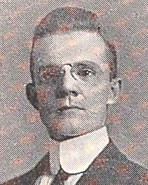

Matus-Haasz Family History
Nicholas Haasz
| Born: | 1805 in Prussia | Sources: | ||
| Died: | Aug. 13, 1854 in Philadelphia, PA | 1854 Philadelphia Inquirer | ||
| Married: | Unknown | |||
| Immigrated: | Jul. 1, 1837 | 1848 Naturalization Petition | ||
| Naturalized: | Sep. 4, 1848 | 1844 Declaration of Intention | ||
| Occupation: | Gunsmith | 1850 Census | ||
| Gunsmith (Spang and Wallace) | 1854 Philadelphia Inquirer | |||
| Spouse: | Margaretta Scheuermann | 1799 - 1888 | ||
| Children: | Anna Margaretta Haasz | 1836 - 1861 | ||
| Charles Friedrich Haasz | 1838 - 1921 | |||
| Joseph Edwin Haasz | 1839 - 1922 | |||
| Residence: | 153 Wood St., Philadelphia, PA | 1837 City Directory | ||
| 152 Wood St., Philadelphia, PA | 1840 City Directory | |||
| Spring Garden Ward 1, Philadelphia, PA | 1840 Census | |||
| Spring Garden Ward 1, Philadelphia, PA | 1850 Census | |||
| Personal: | Nicholas Haasz (originally Nicolaus Haaß) was born around 1805 in Prussia. After immigrating to the United States, Nicholas married Margaretta Scheuermann. They had five children, including Anna, Charles, and Joseph. Anna died at age 25 after complications during childbirth. Charles was a carpenter and father of two daughters, Ella and Bertha. Joseph worked as a broker at the commercial stock exchange. Nicholas worked as a gunsmith at Spang and Wallace at 94 N 3rd Street. He lived on Wood Street in an area currently occupied by the Vine Street Expressway near Dave and Busters.
Nicholas became a naturalized U.S. citizen in 1848. In August 1854, Nicholas decided to take a trip to Atlantic City, NJ. He took the new Camden-Atlantic City train, which after four years of construction was completed and finally open to the public in July 1854. He and some friends went swimming in Absecon Inlet on a Sunday morning. Nicholas, who did not know how to swim, ventured too far and drowned. During that afternoon, nearly $300 was raised for the Haasz family by visitors to the beach. Nicholas is currently buried at Glenwood #49 in Lawnview (formerly Odd Fellows) Cemetery in Rockledge, PA. |
|||
| Images: | Cemetery Records | |||
| Haasz Gravesite | ||||
| Newspaper: | "Melancholy Accident" | Aug. 14, 1854 | Philadelphia Inquirer | |
Margaretta Scheuermann
| Born: | Feb. 1, 1799 in Salem, NJ | Sources: | ||
| Died: | Aug. 10, 1888 in Philadelphia, PA | 1888 Death Certificate | ||
| Married: | Unknown | |||
| Immigrated: | ---- | |||
| Naturalized: | ---- | |||
| Spouse: | Nicholas Haasz | 1805 - 1854 | ||
| Children: | Anna Margaretta Haasz | 1836 - 1861 | ||
| Charles Friedrich Haasz | 1838 - 1921 | |||
| Joseph Edwin Haasz | 1839 - 1922 | |||
| Residence: | 153 Wood St., Philadelphia, PA | 1837 City Directory | ||
| 152 Wood St., Philadelphia, PA | 1840 City Directory | |||
| Spring Garden Ward 1, Philadelphia, PA | 1840 Census | |||
| Spring Garden Ward 1, Philadelphia, PA | 1850 Census | |||
| 453 N. 13th St., Philadelphia, PA | 1860 Census | |||
| 1319 Wallace St., Philadelphia, PA | 1863 City Directory | |||
| 249 Perry St., Philadelphia, PA | 1868 City Directory | |||
| 249 Perry St., Philadelphia, PA | 1870 Census | |||
| 2025 Summer St., Philadelphia, PA | 1880 Census | |||
| 2025 Summer St., Philadelphia, PA | 1882 City Directory | |||
| 2428 Redner St., Philadelphia, PA | 1887 City Directory | |||
| Personal: | Margaretta Scheuermann was born in 1799 in Salem, New Jersey. She married Nicholas Haasz and had five children, including Anna, Charles, and Joseph. Anna died at age 25 after complications during childbirth. Charles was a carpenter and father of two daughters, Ella and Bertha. Joseph worked as a broker at the commercial stock exchange.
The family lived on Wood Street, in an area presently occupied by the Vine Street Expressway and next to Dave and Busters. Margaretta became a widow in 1854 after her husband drowned in Absecon Inlet. Thereafter Margaretta moved in with her son, Joseph. She passed away in 1888 at age 89. Margaretta is currently buried at Glenwood #49 in Lawnview (formerly Odd Fellows) Cemetery in Rockledge, PA. |
|||
| Images: | Cemetery Records | |||
| Haasz Gravesite | ||||
William Ernst Neiler
| Born: | 1811 in Pennsylvania | Sources: | ||
| Died: | May 27, 1877 in Philadelphia, PA | |||
| Married: | Unknown | |||
| Immigrated: | ---- | |||
| Naturalized: | ---- | |||
| Occupation: | Laborer | 1850 Census | ||
| Gas Purifier | 1854 City Directory | |||
| Gas Fitter | 1860 Census | |||
| Gas Works | 1863 Census | |||
| Stoker | 1870 City Directory | |||
| Gas Fitter | 1870 Census | |||
| Gas Purifier | 1875 City Directory | |||
| Spouse: | Mary B. Hughes | 1811 - 1867 | ||
| Married: | Unknown | |||
| Children: | James Reynolds Neiler | 1835 - 1907 | 1907 Burial Card | |
| Mary Elizabeth Neiler | 1837 - 1924 | |||
| Lavinia J. Neiler Giles | 1838 - 1902 | |||
| William H. Neiler | 1840 - 1933 | 1933 Death Certificate | ||
| John Wells Neiler | 1842 - 1922 | 1922 Death Certificate | ||
| Rachael Neiler | 1843 - | |||
| Charles P. Neiler | 1844 - 1908 | 1908 Obituary | ||
| George G. Neiler | 1847 - 1885 | 1885 Obituary | ||
| Anne H. Neiler Gray | 1849 - 1933 | 1933 Death Certificate | ||
| Sophia Neiler | 1851 - | |||
| Residence: | Charlestown, PA | 1840 Census | ||
| Spring Garden Ward 7, Philadelphia, PA | 1850 Census | |||
| 54 Winter St., Philadelphia, PA | 1854 City Directory | |||
| 2056 Winter St., Philadelphia, PA | 1858 City Directory | |||
| 320 N. 21st St., Philadelphia, PA | 1859 City Directory | |||
| 330 N. 21st St., Philadelphia, PA | 1860 City Directory | |||
| 2156 Winter St., Philadelphia, PA | 1862 City Directory | |||
| 2056 Winter St., Philadelphia, PA | 1863 City Directory | |||
| 2055 Winter St., Philadelphia, PA | 1866 City Directory | |||
| 2045 Winter St., Philadelphia, PA | 1867 City Directory | |||
| 2045 Winter St., Philadelphia, PA | 1875 City Directory | |||
| 2025 Winter St., Philadelphia, PA | 1877 City Directory | |||
| Personal: | William Ernst Neiler was born in 1811 in Pennsylvania. He married Mary B. Hughes in the early 1830's and had ten children. In the 1840's the family moved from the rural community of Charlestown to the growing city of Philadelphia. William worked a dangerous occupation as a gas fitter and his wife took care of the children. The Neilers lived in what is now the museum district of Philadelphia. The site of their home is currently the Train Factory exhibit of the Franklin Institute.
William's eldest son, James, was a lieutenant colonel in the U.S. Civil War who served from August 1861 to July 1865. James was buried in Officer's Lot 162 at Philadelphia National Cemetery. Son William H. Neiler also served in the war, as sergeant-major, and was wounded at the Battle of Fredericksburg in 1862. William's third son, John, was a suspected murderer. His wife, aged 35, was found dead in the kitchen of their home in March 1885, due to a hemorrhage of the brain. When investigators arrived at the scene, John refused to allow anyone into the kitchen to see the body. At an inquest, John testified that he and his wife had been quarrelling at the time. He stated that his wife threw a shoe at him, and then he struck her in the face. Due to lack of evidence, the investigation was closed. The case remains unsolved. William passed away at his home in 1877 at age 68. He, along with his wife and three sons, are buried at Morris Cemetery in Phoenixville, Pennsylvania. |
|||
| Images: | Photo of Sergeant-Major William H. Neiler | |||
| Death Certificate of John Neiler's wife | ||||
| Morris Cemetery Gravesite | ||||
| Gravestone of James R. Neiler | ||||
| Newspaper: | "A Wife's Death" | Mar. 10, 1885 | Philadelphia Inquirer | |
| "All Sorts" | Mar. 11, 1885 | Philadelphia Inquirer | ||
| "The 82d Dedicated Last Year" | Sep. 11, 1889 | Philadelphia Inquirer | ||
| "Truth about Veterans" | Dec. 17, 1897 | Philadelphia Inquirer | ||
Mary B. Hughes
| Born: | 1811 in Pennsylvania | Sources: | ||
| Died: | Nov. 28, 1867 in Philadelphia, PA | 1867 Obituary | ||
| Married: | Unknown | |||
| Immigrated: | ---- | |||
| Naturalized: | ---- | |||
| Spouse: | William Ernst Neiler | 1811 - 1877 | ||
| Married: | Unknown | |||
| Children: | James Reynolds Neiler | 1835 - 1907 | 1907 Burial Card | |
| Mary Elizabeth Neiler | 1837 - 1924 | |||
| Lavinia J. Neiler Giles | 1838 - 1902 | |||
| William H. Neiler | 1840 - 1933 | 1933 Death Certificate | ||
| John Wells Neiler | 1842 - 1922 | 1922 Death Certificate | ||
| Rachael Neiler | 1843 - | |||
| Charles P. Neiler | 1844 - 1908 | 1908 Obituary | ||
| George G. Neiler | 1847 - 1885 | 1885 Obituary | ||
| Anne H. Neiler Gray | 1849 - 1933 | 1933 Death Certificate | ||
| Sophia Neiler | 1851 - | |||
| Residence: | Spring Garden Ward 7, Philadelphia, PA | 1850 Census | ||
| 54 Winter St., Philadelphia, PA | 1854 City Directory | |||
| 2056 Winter St., Philadelphia, PA | 1858 City Directory | |||
| 320 N. 21st St., Philadelphia, PA | 1859 City Directory | |||
| 330 N. 21st St., Philadelphia, PA | 1860 City Directory | |||
| 2156 Winter St., Philadelphia, PA | 1862 City Directory | |||
| 2056 Winter St., Philadelphia, PA | 1863 City Directory | |||
| 2055 Winter St., Philadelphia, PA | 1866 City Directory | |||
| 2045 Winter St., Philadelphia, PA | 1867 City Directory | |||
| Personal: | Mary B. Hughes was born around 1811 in Pennsylvania. She married William Ernst Neiler in the early 1830's and had ten children. In the 1840's the family moved from the rural community of Charlestown to the growing city of Philadelphia. William worked a dangerous occupation as a gas fitter and his wife took care of the children. The Neilers lived in what is now the museum district of Philadelphia. The site of their home is currently the Train Factory exhibit of the Franklin Institute.
William's eldest son, James, was a lieutenant colonel in the U.S. Civil War who served from August 1861 to July 1865. James was buried in Officer's Lot 162 at Philadelphia National Cemetery. Son William H. Neiler also served in the war, as sergeant-major, and was wounded at the Battle of Fredericksburg in 1862. Mary passed away at her home in 1867 at age 56. She, along with her husband and three sons, are buried at Morris Cemetery in Phoenixville, Pennsylvania. |
|||
| Images: | Photo of Sergeant-Major William H. Neiler | |||
| Death Certificate of John Neiler's wife | ||||
| Gravesite Photo | ||||
| Newspaper: | "A Wife's Death" | Mar. 10, 1885 | Philadelphia Inquirer | |
| "All Sorts" | Mar. 11, 1885 | Philadelphia Inquirer | ||
| "The 82d Dedicated Last Year" | Sep. 11, 1889 | Philadelphia Inquirer | ||
| "Truth about Veterans" | Dec. 17, 1897 | Philadelphia Inquirer | ||
Anna Margaretta Haasz
| Born: | Mar. 15, 1836 in Philadelphia, PA | Sources: | ||
| Died: | Sep. 7, 1861 in Philadelphia, PA | 1861 Death Certificate | ||
| Married: | 1856 | |||
| Immigrated: | ---- | |||
| Naturalized: | ---- | |||
| Spouse: | Thomas George Shepherd | 1832 - 1907 | ||
| Children: | Charles Shepherd | 1857 - | ||
| Margaret Emily Shepherd | 1859 - 1935 | |||
| Maria Louisa Shepherd | 1860 - 1863 | |||
| Anna Margaretta Shepherd | 1861 - 1861 | 1861 Death Certificate | ||
| Residence: | 152 Wood St., Philadelphia, PA | 1840 City Directory | ||
| Spring Garden Ward 1, Philadelphia, PA | 1840 Census | |||
| Spring Garden Ward 1, Philadelphia, PA | 1850 Census | |||
| 453 N. 13th St., Philadelphia, PA | 1860 Census | |||
| Personal: | Born in 1836 in Philadelphia, Anna Margaretta Haasz was the eldest of three siblings. She had two younger brothers, Charles and Joseph.
During the mid-1850's, Anna married Thomas George Shepherd, the son of English immigrants. Thomas worked in the city as a paper hanger, which is a tradesman who applies wallpaper to interior walls. The couple lived with Anna's parents and two brothers at 453 N. 13th Street in Philadelphia and had three children: Charles, Margaret, and Maria. The Battle of Bull Run was the first major land battle of the Civil War. The battle took place on on July 21, 1861. It was a decisive victory for the Confederates, and a tragic defeat for the Union troops. Around the same time, the Shepherd family was enduring its own kind of personal tragedy. Anna was experiencing complications while pregnant with her fourth child, Anna. The child was born on September 5, 1861. Just two days later, Anna died as a result of puerperal convulsions. On September 14, the newborn child died from cholera infanatum. Anna was 25 years old at the time of her death. After his wife passed, Thomas Shepherd moved his family to Chicago to live with his brother, Frank, and his family. Thomas and Frank both worked as paper hangers. Thomas married Letitia, a native Chicagoan. They had two children together, Nelson and Edwin. Thomas passed away in 1907 at age 75. |
|||
| Images: | Anna Margaretta Haasz Baptism | |||
Charles Friedrich Haasz
| Born: | Aug. 17, 1838 in Philadelphia, PA | Sources: | ||
| Died: | May 4, 1921 in Philadelphia, PA | 1921 Death Certificate | ||
| Married: | Jun. 4, 1866 | 1866 Wedding Notice | ||
| Immigrated: | ---- | |||
| Naturalized: | ---- | |||
| Occupation: | Carpenter | 1860 Census | ||
| Carpenter | 1870 Census | |||
| Carpenter | 1880 Census | |||
| Carpenter | 1900 Census | |||
| Carpenter | 1910 Census | |||
| Carpenter | 1920 Census | |||
| Spouse: | Adrianna Stockton Inskeep | 1842 - 1926 | ||
| Children: | Bertha Inskeep Haasz | 1871 - 1871 | 1871 Obituary | |
| Ella Rebecca Haasz | 1876 - 1954 | |||
| Residence: | 152 Wood St., Philadelphia, PA | 1840 City Directory | ||
| Spring Garden Ward 1, Philadelphia, PA | 1840 Census | |||
| Spring Garden Ward 1, Philadelphia, PA | 1850 Census | |||
| 453 N. 13th St., Philadelphia, PA | 1860 Census | |||
| 1319 Wallace St., Philadelphia, PA | 1863 City Directory | |||
| 1224 Haines St., Philadelphia, PA | 1868 City Directory | |||
| 1224 Haines St., Philadelphia, PA | 1870 Census | |||
| 1224 Haines St., Philadelphia, PA | 1880 Census | |||
| 1224 Haines St., Philadelphia, PA | 1882 City Directory | |||
| 1931 N. 24th St., Philadelphia, PA | 1887 City Directory | |||
| 1931 N. 24th St., Philadelphia, PA | 1892 City Directory | |||
| 1931 N. 24th St., Philadelphia, PA | 1900 Census | |||
| 1931 N. 24th St., Philadelphia, PA | 1904 City Directory | |||
| 1931 N. 24th St., Philadelphia, PA | 1920 Census | |||
| Personal: | Charles Friedrich Haasz was born in 1838 in Philadelphia, Pennsylvania. He was among the first Haasz generation born in the United States and to adopt the anglicized surname "Haasz". Charles was 20 years old during the outbreak of the U.S. Civil War, the bloodiest conflict in American history.
In 1866, Charles married Adrianna Inskeep of New Jersey. They had two daughters, Bertha and Ella. On Christmas morning of 1871, Bertha died of smallpox. She is interred in Lot 108 at Mount Peace Cemetery in Philadelphia. Charles worked as a carpenter, a profession in which he continued throughout his entire life. Charles grew up in the Spring Garden district of Philadelphia. As he married and began a family, Charles moved to the suburb of Germantown. He lived in Germantown for most of his adult life, before moving back into the city in the mid 1880's to be within 4 blocks of his brother and elderly mother. His mother, Margaretta, passed in 1888 at age 89. For the remainder of his life, Charles lived in the city with his wife and daughter. Charles passed away in 1921 at age 83 after suffering congestive heart failure. He is buried in the Riverview section at Westminster Cemetery in Lower Merion, Pennsylvania. |
|||
| Images: | Charles Friedrich Haasz Baptism | |||
| Photo of Gravesite | ||||
| Layout of Gravesite | ||||
| Mt. Peace Cemetery Records | ||||
| Mt. Peace Cemetery Photo | ||||
| Newspaper: | Petition Against Removing Railroad | Feb. 26, 1866 | Philadelphia Inquirer | |
| Charles Haasz Wedding Announcement | Jun. 20, 1866 | Philadelphia Inquirer | ||
| Obituary of Bertha Haasz | Dec. 28, 1871 | Philadelphia Inquirer | ||
| Ella Haasz, Maid of Honor | Sep. 19, 1889 | Philadelphia Inquirer | ||
Joseph Edwin Haasz
| Born: | Sep. 27, 1839 in Philadelphia, PA | Sources: | ||
| Died: | Oct. 26, 1922 in Philadelphia, PA | 1922 Death Certificate | ||
| Married: | 1865 | |||
| Immigrated: | ---- | |||
| Naturalized: | ---- | |||
| Occupation: | Clerk | 1860 Census | ||
| Car driver | 1870 Census | |||
| Truckman | 1880 Census | |||
| Drayman | 1881 City Directory | |||
| Driver | 1883 City Directory | |||
| Clerk | 1887 City Directory | |||
| Salesman | 1889 City Directory | |||
| Clerk at Commercial Exchange | 1900 Census | |||
| Stockmarket Broker | 1910 Census | |||
| Clerk at Commercial Exchange | 1920 Census | |||
| Gateman at the Bourse | 1922 Death Certificate | |||
| Spouse: | Mary Elizabeth Neiler | 1837 - 1924 | ||
| Children: | Anna Margaret Haasz | 1869 - 1949 | ||
| Joseph Edwin Haasz | 1871 - 1943 | |||
| Mary "Mamie" Neiler Haasz | 1874 - 1877 | 1877 Death Certificate | ||
| George Milon Haasz | 1879 - 1962 | |||
| Residence: | 152 Wood St., Philadelphia, PA | 1840 City Directory | ||
| Spring Garden Ward 1, Philadelphia, PA | 1840 Census | |||
| Spring Garden Ward 1, Philadelphia, PA | 1850 Census | |||
| 453 N. 13th St., Philadelphia, PA | 1860 Census | |||
| 1319 Wallace St., Philadelphia, PA | 1863 City Directory | |||
| 249 Perry St., Philadelphia, PA | 1868 City Directory | |||
| 249 Perry St., Philadelphia, PA | 1870 Census | |||
| 2025 Summer St., Philadelphia, PA | 1880 Census | |||
| 2025 Summer St., Philadelphia, PA | 1882 City Directory | |||
| 2428 Redner St., Philadelphia, PA | 1887 City Directory | |||
| 1525 N. 24th St., Philadelphia, PA | 1892 City Directory | |||
| 1722 N. 25th St., Philadelphia, PA | 1900 Census | |||
| 1733 N. 25th St., Philadelphia, PA | 1904 City Directory | |||
| 1733 N. 25th St., Philadelphia, PA | 1910 Census | |||
| 1733 N. 25th St., Philadelphia, PA | 1920 Census | |||
| Personal: | Joseph Edwin Haasz was born in 1839 in Philadelphia, Pennsylvania. He was among the first Haasz generation born in the United States and to adopt the anglicized surname "Haasz". Joseph was 22 years old during the outbreak of the U.S. Civil War, the bloodiest conflict in American history.
In 1865 at age 27, Joseph married Mary Neiler, and had four children. Their third child, Mamie, passed away in 1877 at the age of 2. Anna, the eldest child, was a world traveler with high profile trips to Germany and Italy published in the Philadephia Inquirer. Anna submitted a personal ad in 1911 to seek employment as a dressmaker. Anna, as well as her brother George, never married and lived together in 1940. George, the youngest child, attended Pennington Seminary and later received a B.A. in 1906 from the University of Pennsylvania, where he was a member of the Psi Upsilon fraternity. After college he taught at the South Philadelphia High School for Boys and helped organize the Class of 1917 school play, "The Great Catastrophe". George was an accomplished baritone singer who performed at church services as well as local fairs. At age 63, George enlisted in the 1942 draft. Joseph worked as a stockmarket broker at the Philadelphia Consolidated Exchange. One day in 1903, while at work, a stray dog wandered inside the stock exchange and began chewing on the ticker tape. Joseph "bravely beat off the animal with a broom" and was recognized for his heroic action with an article in the Philadelphia Inquirer. Nevertheless, Joseph remained employed at the stock exchange for the rest of his life. Joseph passed away in 1922 after suffering a stroke at his home at age 83. He is buried at West Laurel Hill Cemetery in lot Norriton 204. |
|||
| Images: | Joseph Edwin Haasz Baptism | |||
| Photo of Gravesite | ||||
| Layout of Gravesite | ||||
| Newspaper: | Obituary of Mamie Neiler | Jul. 7, 1877 | Philadelphia Inquirer | |
| "Dog Disturbed Bulls and Bears" | Mar. 24, 1903 | Philadelphia Inquirer | ||
Mary Elizabeth Neiler
| Born: | Mar. 12, 1837 in Charlestown, PA | Sources: | ||
| Died: | Apr. 4, 1924 in Philadelphia, PA | 1924 Death Certificate | ||
| Married: | 1865 | |||
| Immigrated: | ---- | |||
| Naturalized: | ---- | |||
| Spouse: | Joseph Edwin Haasz | 1839 - 1922 | ||
| Children: | Anna Margaret Haasz | 1869 - 1949 | ||
| Joseph Edwin Haasz | 1871 - 1943 | |||
| Mary "Mamie" Neiler Haasz | 1874 - 1877 | 1877 Death Certificate | ||
| George Milon Haasz | 1879 - 1962 | |||
| Residence: | Charlestown, PA | 1840 Census | ||
| Spring Garden Ward 7, Philadelphia, PA | 1850 Census | |||
| 453 N. 13th St., Philadelphia, PA | 1860 City Directory | |||
| 1319 Wallace St., Philadelphia, PA | 1863 City Directory | |||
| 249 Perry St., Philadelphia, PA | 1868 City Directory | |||
| 249 Perry St., Philadelphia, PA | 1870 Census | |||
| 2025 Summer St., Philadelphia, PA | 1880 Census | |||
| 2025 Summer St., Philadelphia, PA | 1882 City Directory | |||
| 2428 Redner St., Philadelphia, PA | 1887 City Directory | |||
| 1525 N. 24th St., Philadelphia, PA | 1892 City Directory | |||
| 1722 N. 25th St., Philadelphia, PA | 1900 Census | |||
| 1733 N. 25th St., Philadelphia, PA | 1904 City Directory | |||
| 1733 N. 25th St., Philadelphia, PA | 1910 Census | |||
| 1733 N. 25th St., Philadelphia, PA | 1920 Census | |||
| Personal: | Mary Elizabeth Neiler was born in 1837 in Pennsylvania. Mary was 24 years old during the outbreak of the U.S. Civil War, the bloodiest conflict in American history.
In 1865 at age 28, Mary married Joseph Edwin Haasz, and had four children. Their third child, Mamie, passed away in 1877 at the age of 2. Anna, the eldest child, was a world traveler with high profile trips to Germany and Italy published in the Philadephia Inquirer. Anna submitted a personal ad in 1911 to seek employment as a dressmaker. Anna, as well as her brother George, never married and lived together in 1940. George, the youngest child, attended Pennington Seminary and later received a B.A. in 1906 from the University of Pennsylvania, where he was a member of the Psi Upsilon fraternity. After college he taught at the South Philadelphia High School for Boys and helped organize the Class of 1917 school play, "The Great Catastrophe". George was an accomplished baritone singer who performed at church services as well as local fairs. At age 63, George enlisted in the 1942 draft. Mary passed away from bronchial pneumonia in 1924 at age 87. She is buried at West Laurel Hill Cemetery in lot Norriton 204. |
|||
| Images: | Photo of Gravesite | |||
| Layout of Gravesite | ||||
| Newspaper: | Obituary of Mamie Neiler | Jul. 7, 1877 | Philadelphia Inquirer | |
| "Dog Disturbed Bulls and Bears" | Mar. 24, 1903 | Philadelphia Inquirer | ||
William Wagner
| Born: | 1837 in Bavaria | Sources: | ||
| Died: | Oct. 16, 1889 in Philadelphia, PA | 1889 Death Certificate | ||
| Married: | Mar. 11, 1861 | 1861 Marriage Certificate | ||
| Immigrated: | 1853 | |||
| Naturalized: | Feb. 20, 1860 | 1860 Naturalization Record | ||
| Occupation: | Shoemaker | 1860 Census | ||
| Shoemaker | 1870 Census | |||
| Shoemaker | 1880 Census | |||
| Grocer | 1889 Death Certificate | |||
| Spouse: | Emma Wurtz | 1843 - 1909 | ||
| Children: | Julia Wagner | 1862 - | ||
| Emma Wagner | 1863 - | |||
| William Wagner | 1865 - 1940 | |||
| Henry Wagner | 1866 - | |||
| Louisa Wagner | 1869 - | |||
| Charles Wagner | 1871 - | |||
| Anthony Wagner | 1872 - 1941 | 1941 Death Certificate | ||
| Mary Wagner | 1872 - | |||
| Carrie Wagner | 1876 - | |||
| Julia Wagner | 1877 - 1965 | |||
| Flora Wagner | 1878 - | |||
| Amelia Parncutt | 1879 - | |||
| Residence: | 827 N. 3rd St., Philadelphia, PA | 1860 City Directory | ||
| 837 N. 3rd St., Philadelphia, PA | 1861 City Directory | |||
| 704 N. 4th St., Philadelphia, PA | 1863 City Directory | |||
| 331 Green St., Philadelphia, PA | 1865 City Directory | |||
| 36th District Ward 12, Philadelphia, PA | 1870 Census | |||
| 942 N. 6th St., Philadelphia, PA | 1874 City Directory | |||
| 1061 Germantown Ave., Philadelphia, PA | 1875 City Directory | |||
| 2122 Bodine St., Philadelphia, PA | 1877 City Directory | |||
| 411 York Ave., Philadelphia, PA | 1879 City Directory | |||
| 442 York Ave., Philadelphia, PA | 1880 Census | |||
| 533 Dillwyn St., Philadelphia, PA | 1889 Death Certificate | |||
| Personal: | William Wagner was born in 1837 in Bavaria. He immigrated to New York in 1853 and later moved to Philadelphia. He petitioned for naturalization and was granted U.S. citizenship on February 20, 1860. William married Emma, a Pennsylvanian, and had twelve children together. William worked as a shoemaker. He went by the nickname Willie. The family lived in the Northern Liberties section of Philadelphia. William passed away in 1889 from pulmonary tuberculosis. He is buried in Mount Vernon Cemetery in Philadelphia. | |||
Emma Wurtz
| Born: | Mar. 15, 1843 in Pennsylvania | Sources: | ||
| Died: | Oct. 5, 1909 in Philadelphia, PA | 1909 Death Certificate | ||
| Married: | Mar. 11, 1861 | 1861 Marriage Certificate | ||
| Immigrated: | ---- | |||
| Naturalized: | ---- | |||
| Spouse: | William Wagner | 1837 - 1889 | ||
| Children: | Julia Wagner | 1862 - | ||
| Emma Wagner | 1863 - | |||
| William Wagner | 1865 - 1940 | |||
| Henry Wagner | 1866 - | |||
| Louisa Wagner | 1869 - | |||
| Charles Wagner | 1871 - | |||
| Anthony Wagner | 1872 - 1941 | 1941 Death Certificate | ||
| Mary Wagner | 1872 - | |||
| Carrie Wagner | 1876 - | |||
| Julia Wagner | 1877 - 1965 | |||
| Flora Wagner | 1878 - | |||
| Amelia Parncutt | 1879 - | |||
| Residence: | 827 N. 3rd St., Philadelphia, PA | 1860 City Directory | ||
| 837 N. 3rd St., Philadelphia, PA | 1861 City Directory | |||
| 704 N. 4th St., Philadelphia, PA | 1863 City Directory | |||
| 331 Green St., Philadelphia, PA | 1865 City Directory | |||
| 36th District Ward 12, Philadelphia, PA | 1870 Census | |||
| 942 N. 6th St., Philadelphia, PA | 1874 City Directory | |||
| 1061 Germantown Ave., Philadelphia, PA | 1875 City Directory | |||
| 2122 Bodine St., Philadelphia, PA | 1877 City Directory | |||
| 411 York Ave., Philadelphia, PA | 1879 City Directory | |||
| 442 York Ave., Philadelphia, PA | 1880 Census | |||
| 533 Dillwyn St., Philadelphia, PA | 1889 Death Certificate | |||
| 3109 Darien St., Philadelphia, PA | 1900 Census | |||
| 2534 N. Leithgow St., Philadelphia, PA | 1902 City Directory | |||
| 2837 N. 9th St., Philadelphia, PA | 1909 Death Certificate | |||
| Personal: | Emma Wurtz, the daughter of German immigrants, was born in 1843 in Pennsylvania. She married William Wagner, a German immigrant, and had twelve children together. The family lived in the Northern Liberties section of Philadelphia. After her husband passed in 1889, Emma moved in with her daughter, Julia, and son-in-law, Joseph Edwin Haasz. Emma attended Columbia Avenue Church with the Haasz family. Emma passed away from an intestinal obstruction in October 1909, almost exactly twenty years to the day after the passing of her husband. She is buried in Mount Vernon Cemetery in Philadelphia. | |||
| Images: | 1902 Church Records | |||
Heinrich Quenzer
| Born: | Sep. 20, 1864 in Germany | Sources: | ||
| Died: | Aug. 23, 1923 in Philadelphia, PA | 1923 Death Certificate | ||
| Married: | Sep. 14, 1890 | 1890 Marriage Certificate | ||
| Immigrated: | 1888 | |||
| Naturalized: | Dec. 7, 1903 | 1903 Naturalization Record | ||
| Occupation: | Brewer | 1895 City Directory | ||
| Brewmaster | 1917 City Directory | |||
| Brewmaster (Jacob Hornung) | 1918 Brewer's Handbook | |||
| Master Brewer | 1920 Census | |||
| Spouse: | Maria Anna Koerber | 1868 - 1920 | ||
| Children: | Henry Ludwig Quenzer | 1891 - 1958 | ||
| Elizabeth M. Sampson | 1892 - 1963 | 1963 Death Certificate | ||
| Emma Berk | 1894 - 1935 | 1935 Death Certificate | ||
| Mary E. Gray | 1896 - 1962 | 1962 Death Certificate | ||
| Charles Quenzer | 1897 - 1965 | |||
| William "Willie" Quenzer | 1902 - 1902 | 1902 Death Certificate | ||
| Residence: | 1221 N. 29th St., Philadelphia, PA | 1890 Marriage Certificate | ||
| 331 Brown St., Philadelphia, PA | 1895 City Directory | |||
| 236 Jefferson St., Philadelphia, PA | 1900 Census | |||
| 1321 N. Lawrence St., Philadelphia, PA | 1902 Death Certificate | |||
| 424 Jefferson St., Philadelphia, PA | 1906 City Directory | |||
| 4136 N. 5th St., Philadelphia, PA | 1917 City Directory | |||
| 4136 N. 5th St., Philadelphia, PA | 1920 Census | |||
| Personal: | Heinrich emmigrated to the United States from Germany in 1888 at age 24. He petitioned for naturalization on February 8, 1893 and was granted U.S. citizenship on December 7, 1903. Around the turn of the century, Heinrich learned the trade of beer brewing while working as a cellarman at a local brewery in Philadelphia.
In the 1910's, Heinrich worked at the Protobrewing Company at 1224 Frankford Ave. His son, Henry, worked as a bottler. Protobrewing was in operation from 1910 until 1917, when the company was forced to shut down after filing for bankruptcy. Heinrich and his sons began new work at Jacob Hornung, Tioga Brewery at N. 22nd and Clearfield St. In 1918, Heinrich was recognized as brewmaster of Jacob Hornung. In the following years, operation of the brewery was severely impacted by Prohibition. On June 30, 1919, the Wartime Prohibition Act banned the sale of alcoholic beverages having an alcohol content of greater than 2.75%. The next day, July 1, 1919, widely became known as the Thirsty-First. The Volstead Act, or National Prohibition Act, went into effect on January 20, 1920. The 18th Amendment prohibited the "manufacture, sale, or transportation of intoxicating liquors" in the United States. Seven days before Prohibition officially went into effect, Heinrich Quenzer indicated his occupation as "master brewer" on the 1920 Census. Brewery operations at Jacob Hornung shut down that same week. Prohibition lasted from January 20, 1920 until December 5, 1933. Unfortunately, Heinrich Quenzer did not live to see Prohibition repealed. Heinrich passed away at his home in 1923 after suffering kidney failure. |
|||
| Images: | Photo of Heinrich Quenzer | |||
| Elizabeth Quenzer Baptism | ||||
| Protobrewing Co. | ||||
| 1918 "Jacob Hornung" Beer Label | ||||
| 1910 "Jacob Hornung" Beer Bottle | ||||
| Quenzer Gravestones | ||||
| Newspaper: | Mary Quenzer Wedding Announcement | Jul. 7, 1920 | Evening Public Ledger | |
| Emma Quenzer Wedding Announcement | Jul. 31, 1920 | Evening Public Ledger | ||
Maria Anna Koerber
| Born: | Dec. 12, 1868 in Germany | Sources: | ||
| Died: | Mar. 11, 1920 in Philadelphia, PA | 1890 Death Certificate | ||
| Married: | Sep. 10, 1890 | 1890 Marriage Certificate | ||
| Immigrated: | Apr. 23, 1889 | |||
| Naturalized: | 1893 | |||
| Spouse: | Heinrich Quenzer | 1868 - 1920 | ||
| Children: | Henry Ludwig Quenzer | 1891 - 1958 | ||
| Elizabeth M. Sampson | 1892 - 1963 | 1963 Death Certificate | ||
| Emma Berk | 1894 - 1935 | 1935 Death Certificate | ||
| Mary E. Gray | 1896 - 1962 | 1962 Death Certificate | ||
| Charles Quenzer | 1897 - 1965 | |||
| William "Willie" Quenzer | 1902 - 1902 | 1902 Death Certificate | ||
| Residence: | 1221 N. 29th St., Philadelphia, PA | 1890 Marriage Certificate | ||
| 331 Brown St., Philadelphia, PA | 1895 City Directory | |||
| 236 Jefferson St., Philadelphia, PA | 1900 Census | |||
| 1321 N. Lawrence St., Philadelphia, PA | 1902 Death Certificate | |||
| 424 Jefferson St., Philadelphia, PA | 1906 City Directory | |||
| 4136 N. 5th St., Philadelphia, PA | 1917 City Directory | |||
| 4136 N. 5th St., Philadelphia, PA | 1920 Census | |||
| Personal: | Maria Koerber was born in 1868 to Mary and Augustus Koerber of Bad Dürkheim, Germany. She emmigrated to the United States in 1889 at age 20. Maria married Heinrich Quenzer, also a German immigrant, in Philadelphia, PA in 1890. Three years later, she became a naturalized U.S. citizen.
Heinrich and Maria had six children. Their fifth child, "Willie" Quenzer, was a stillborn. The Quenzers lived in Northern Liberties before moving north to the Hunting Park section of Philadelphia. Maria passed away at her home in 1920 after suffering kidney failure. |
|||
| Images: | Photo of Maria Koerber | |||
| Elizabeth Quenzer Baptism | ||||
| Protobrewing Co. | ||||
| 1918 "Jacob Hornung" Beer Label | ||||
| 1910 "Jacob Hornung" Beer Bottle | ||||
| Mary Quenzer Wedding Announcement | ||||
| Emma Quenzer Wedding Announcement | ||||
| Quenzer Gravestones | ||||
Victor Matusevich
| Born: | 1850 - 1880 in Lesnikoff, Vitebsk, Belarus | Sources: | ||
| Died: | 1895 - 1913 in Lesnikoff, Vitebsk, Belarus | |||
| Married: | Unknown | |||
| Immigrated: | ---- | |||
| Naturalized: | ---- | |||
| Occupation: | Unknown | |||
| Spouse: | Paraskiva Kuleshoff | ???? - ???? | ||
| Children: | Alexander Victor Matusevich | 1895 - 1978 | ||
| Residence: | Lesno, Vitebsk, Belarus | 1914 Map | ||
| Personal: | Victor Matusevich was born in the Vitebsk province of Belarus. During his life, this area was considered part of Russia.
The late 1800's were a tumultuous period in Russian history. Whereas the wave of democracy was spreading across Western Europe, Russia was tightening its hold on autocratic absolute power. After Russia's embarrassing defeat in the Crimean War and growing civil unrest, Czar Alexander II felt pressure to introduce radical constitutional reform. In 1861, Alexander II issued the Emancipation Manifesto to abolish serfdom. He also introduced local self-government and modernized Russia's court system. Despite these liberal reforms, the seeds for bloody revolution were already planted. In 1881, Alexander II was assassinated by a member of left-wind terrorist group, Narodnaya Volya. In contrast to the liberal policies of Alexander II, successor Alexander III was a stauch reactionary who vowed to restore the autocracy by forcing opposition groups into submission. Revolutionary fervor was contained but had reached a boiling point ready to explode at the slightest provocation. Alexander III passed away in 1894 and was succeeded by Nicholas II. Nicholas proved to be a weak leader incapable of dealing with the unstable political climate. The following years brought about the downfall of Russian autocracy and civil war. Anyone living in Russia at the time would have inevitably felt the painful consequences of revolutionary political upheaval. |
|||
Paraskiva Kuleshoff
| Born: | 1850 - 1880 in Lesnikoff, Vitebsk, Belarus | Sources: | ||
| Died: | 1895 - 1913 in Lesnikoff, Vitebsk, Belarus | |||
| Married: | Unknown | |||
| Immigrated: | ---- | |||
| Naturalized: | ---- | |||
| Spouse: | Victor Matusevich | ???? - ???? | ||
| Children: | Alexander Victor Matusevich | 1895 - 1978 | ||
| Residence: | Lesno, Vitebsk, Belarus | 1914 Map | ||
| Personal: | Paraskiva Kuleshoff was born in the Vitebsk province of Belarus. During her life, this area was part of Russia.
The late 1800's were a tumultuous period in Russian history. Whereas the wave of democracy was spreading across Western Europe, Russia was tightening its hold on autocratic absolute power. After Russia's embarrassing defeat in the Crimear War and growing civil unrest, Czar Alexander II felt pressure to introduce radical constitutional reform. In 1861, Alexander II issued the Emancipation Manifesto to abolish serfdom. He also introduced local self-government and modernized Russia's court system. Despite these liberal reforms, the seeds for bloody revolution were already planted. In 1881, Alexander II was assassinated by a member of left-wind terrorist group, Narodnaya Volya. In contrast to the liberal policies of Alexander II, successor Alexander III was a stauch reactionary who vowed to restore the autocracy by forcing opposition groups into submission. Revolutionary fervor was contained but had reached a boiling point ready to explode at the slightest provocation. Alexander III passed away in 1894 and was succeeded by Nicholas II. Nicholas proved to be a weak leader incapable of dealing with the unstable political climate. The following years brought about the downfall of Russian autocracy and civil war. Anyone living in Russia at the time would have inevitably felt the painful consequences of revolutionary political upheaval. |
|||
Peter Petuf
| Born: | 1859 in Lepiel, Vitebsk, Belarus | Sources: | ||
| Died: | 1910 in Philadelphia, PA | |||
| Married: | 1896 | |||
| Immigrated: | Jul. 3, 1908 | 1908 Immigration Record | ||
| Naturalized: | ---- | |||
| Occupation: | Box factory helper | 1910 Census | ||
| Spouse: | Stephania Hicovitch | 1875 - 1944 | ||
| Children: | (female) | 1898 - 1904 | ||
| Mary Comisarow | 1900 - 2001 | |||
| (female) | 1902 - 1904 | |||
| Anna Marie Matusevich | 1907 - 1997 | |||
| Residence: | 474 N. 6th St., Philadelphia, PA | 1910 Census | ||
| Personal: | Peter Petuf was born in 1859 in Lepiel, Belarus, Russia (about 80 miles northeast of Minsk) and died in 1910 in Philadelphia. Peter's father or grandfather received a minor title from the czar as a reward for services rendered to Russia (possibly during Napoleon's French invasion of Russia during the 1812/1813 campaign). His father was a land owner.
Peter married his first wife around 1880. She gave birth to two sons. Around 1896, Peter married Stephanna Hicovitch. She gave birth to two daughters. When Peter and Stephanna left for the United States in 1908, the two adult sons remained in Russia. On July 03, 1908, Peter emigrated from Russia to New York (Ellis Island) via the SS Baltic (White Star Lines). The ship departed from Liverpool, England on June 23, 1908. The ship passenger's list indicate Peter, Stefania (Stephania), Marie (Mary), and Anite (Anna). Peter moved his family to Philadelphia, where they lived in a neighborhood of Russian immigrants. In the United States, Peter kept his family name, Petuf. The name Petuf has several spelling variations, including Piotuski, Petuchowa, Peutuf, Putak, and Petuf (Peter D. Comisarow determined that Petuf was the correct name). Two years after arriving in the United States, Peter died of pneumonia in 1910. He was buried in a cemetery near where he lived. The name of the cemetery is unknown. |
|||
Stephania Hicovitch
| Born: | Dec. 24, 1875 in Lepiel, Vitebsk, Belarus | Sources: | ||
| Died: | May 26, 1944 in Philadelphia, PA | 1944 Death Certificate | ||
| Married: | 1896 | |||
| Immigrated: | Jul. 3, 1908 | 1908 Immigration Record | ||
| Naturalized: | ---- | |||
| Occupation: | Washerwoman | 1910 Census | ||
| Restaurant cook | 1910 Census | |||
| Spouse: | Peter Petuf | 1859 - 1910 | ||
| Children: | (female) | 1898 - 1904 | ||
| Mary Comisarow | 1900 - 2001 | |||
| (female) | 1902 - 1904 | |||
| Anna Marie Matusevich | 1907 - 1997 | |||
| Residence: | 474 N. 6th St., Philadelphia, PA | 1910 Census | ||
| 1728 Monument Ave., Philadelphia, PA | 1930 Census | |||
| 1720 Monument Ave., Philadelphia, PA | 1940 Census | |||
| 2716 W. Silver St., Philadelphia, PA | 1941 Philadelphia Inquirer | |||
| 7418 Boyer St., Philadelphia, PA | 1943 Naturalization Record | |||
| 4634 Greene St., Philadelphia, PA | 1944 Philadelphia Inquirer | |||
| Personal: | Stephania Hicovitch was born on December 24, 1875 in Lepiel, Vitebsk, Belarus and died on May 26, 1944 in Philadelphia, Pennsylvania. Her mother was the town herbalist and midwife. She married twice and Stephanna was a daughter from the second marriage. Stephanna had two brothers. One brother is named Anton Hikovich (his oldest son Karl Hikovich is a medical doctor). The name of the other brother is unknown.
Stephanna arrived in the United States through Ellis Island. Her name "Stephana Hikovich Petuf" is currently engraved on the American Immigrant Wall of Honor (panel 550). Her nationality was Polish. Stephanna could speak Polish, Russian, Ukrainian, and some Yiddish. She lived in the Spring Garden neighborhood of Philadelphia. Until the mid 1920's, she lived in a neighborhood which included many Russian Jewish immigrants. Around 1925, Stephanna bought a house at 1728 Monument Avenue and rented out apartments for income. Her daughter Anna helped her manage renters and any problems. Stephanna is described as a very independent, firm, no-nonsense, goal-oriented woman. She was about 4 ft. 9 inches tall and did not speak English. After her husband's death in 1910, she supported her children by working six days a week as a restaurant cook. She lived in relatively good health most of her life. She walked to most places for her daily needs. In her last years, Stephanna enjoyed her daily morning coffee break and talking with her daughter Mary. Stephanna passed away on May 26, 1944 from bladder cancer. She is buried at Holy Sepulchre Catholic Cemetery in Glenside, Pennsylvania (certificate #17041, dtd 5/29/1944 for grave #1, lot #88, range 1, section 4). |
|||
| Images: | Oil Painting Portrait | |||
| 1940's Photograph | ||||
| Photo of Gravestone | ||||
Anna Margaret Haasz
| Born: | Apr. 4, 1869 in Philadelphia, PA | Sources: | ||
| Died: | Feb. 26, 1949 in Philadelphia, PA | |||
| Married: | ---- | |||
| Immigrated: | ---- | |||
| Naturalized: | ---- | |||
| Occupation: | Dressmaker | 1900 Census | ||
| Dressmaker | 1910 Census | |||
| Dressmaker | 1920 Census | |||
| Dressmaker | 1930 Census | |||
| Residence: | 2025 Summer St., Philadelphia, PA | 1870 Census | ||
| 2025 Summer St., Philadelphia, PA | 1880 Census | |||
| 2025 Summer St., Philadelphia, PA | 1882 City Directory | |||
| 2428 Redner St., Philadelphia, PA | 1887 City Directory | |||
| 1525 N. 24th St., Philadelphia, PA | 1892 City Directory | |||
| 1722 N. 25th St., Philadelphia, PA | 1900 Census | |||
| 1733 N. 25th St., Philadelphia, PA | 1904 City Directory | |||
| 1733 N. 25th St., Philadelphia, PA | 1910 Census | |||
| 1733 N. 25th St., Philadelphia, PA | 1917 Draft Registration | |||
| 1733 N. 25th St., Philadelphia, PA | 1920 Census | |||
| 6117 6th St., Philadelphia, PA | 1930 Census | |||
| 6117 6th St., Philadelphia, PA | 1940 Census | |||
| 6117 N. 6th St., Philadelphia, PA | 1942 Draft Registration | |||
| Personal: | Anna Margaret Haasz was born in Philadelphia in 1869. She had two younger brothers, Joseph and George. The family lived in the Brewerytown section of Philadelphia.
Anna, the eldest child, was a world traveler with high profile trips to Germany and Italy published in the Philadephia Inquirer. Anna submitted a personal ad in 1911 to seek employment as a dressmaker. Anna, as well as her brother George, never married and lived together in the house of her aunt Anna Gray. Anna passed away in 1949. She is buried at West Laurel Hill Cemetery in lot Norriton 204. |
|||
| Images: | 1905 Cruise (Philadelphia-Liverpool) | |||
| 1907 Cruise (New York-Naples) | ||||
| 1943 Haasz Photo #1 | ||||
| 1943 Haasz Photo #2 | ||||
| Photo of Gravesite | ||||
| Layout of Gravesite | ||||
| Newspaper: | "Exodus to Europe Still Unabated" | Jul. 18, 1907 | Philadelphia Inquirer | |
| "Philadelphians off to Europe" | Jul. 2, 1910 | Philadelphia Inquirer | ||
| "Dressmaker wants waist hands" | Mar. 14, 1911 | Philadelphia Inquirer | ||
George Milon Haasz
|  | Born: | Feb. 8, 1879 in Philadelphia, PA | Sources: | |
| Died: | Jul. 14, 1962 in Philadelphia, PA | |||
| Married: | ---- | |||
| Immigrated: | ---- | |||
| Naturalized: | ---- | |||
| Occupation: | Teacher (South Philadelphia H.S.) | 1920 Census | ||
| Teacher (South Philadelphia H.S.) | 1942 Draft Registration | |||
| Residence: | 2025 Summer St., Philadelphia, PA | 1880 Census | ||
| 2025 Summer St., Philadelphia, PA | 1882 City Directory | |||
| 2428 Redner St., Philadelphia, PA | 1887 City Directory | |||
| 1525 N. 24th St., Philadelphia, PA | 1892 City Directory | |||
| 1722 N. 25th St., Philadelphia, PA | 1900 Census | |||
| 1733 N. 25th St., Philadelphia, PA | 1904 City Directory | |||
| 1733 N. 25th St., Philadelphia, PA | 1910 Census | |||
| 1733 N. 25th St., Philadelphia, PA | 1917 Draft Registration | |||
| 1733 N. 25th St., Philadelphia, PA | 1920 Census | |||
| 6117 6th St., Philadelphia, PA | 1930 Census | |||
| 6117 6th St., Philadelphia, PA | 1940 Census | |||
| 6117 N. 6th St., Philadelphia, PA | 1942 Draft Registration | |||
| 6117 N. 6th St., Philadelphia, PA | 1950 City Directory | |||
| Personal: | George Milon Haasz was born in 1879 in Philadelphia, Pennsylvania. He had an older brother, Joseph, and sister, Anna. The family lived in the Brewerytown section of Philadelphia.
George, the youngest child, graduated from Pennington Seminary in Pennington, New Jersey. In 1902, he enrolled at Wesleyan University, from which he transferred in 1903 to the University of Pennsylvania. George received a B.A. in 1906 from the University of Pennsylvania, where he was a member of the Psi Upsilon fraternity. George remained at the University of Pennsylvania for the following two years, serving as assistant professor in European History. From 1908 to 1909, George was a professor in History, English, and Social Science at Muhlenberg College. In later years, George was a teacher at the South Philadelphia High School for Boys, where he helped organize the Class of 1917 school play, "The Great Catastrophe". As a European history teacher, George finally realized his dream of visiting Europe in 1933, when he took a cruise to Ireland. George was an accomplished baritone singer who performed at church services and local fairs. George passed away in 1962. He is buried at West Laurel Hill Cemetery in lot Norriton 204. |
|||
| Images: | 1932 Cruise (New York-Havana) | |||
| 1933 Cruise (New York-Glascow) | ||||
| Photo of S.S. California | ||||
| Portrait with Tophat | ||||
| 1943 Haasz Photo #1 | ||||
| 1943 Haasz Photo #2 | ||||
| Photo of Gravesite | ||||
| Layout of Gravesite | ||||
| Yearbook: | 1910 Photo of George Haasz | |||
| 1910 Yearbook - Muhlenberg University | ||||
| 1921 Yearbook - Wesleyan University | ||||
| 1922 Yearbook - University of Pennsylvania | ||||
| Newspaper: | "Now on the Road for their Diplomas, Admissions to Central High School" | Jun. 30, 1894 | Philadelphia Inquirer | |
| "Philomatheon Society Celebrates" | May 20, 1901 | Philadelphia Inquirer | ||
| "Music Filled Chapel" | Mar. 15, 1902 | Philadelphia Inquirer | ||
| "Musical at Pennington" | Apr. 14, 1902 | Philadelphia Inquirer | ||
| "Penn Turns out Student Army" | Jun. 14, 1906 | Philadelphia Inquirer | ||
| "Beach Haven Puts on Summer Attire" | Jun. 14, 1910 | Philadelphia Inquirer | ||
| "Play by High School Lads" | Nov. 21, 1916 | Evening Public Ledger | ||
Joseph Edwin Haasz
| Born: | Aug. 5, 1871 in Philadelphia, PA | Sources: | ||
| Died: | Mar. 16, 1943 in Philadelphia, PA | 1943 Death Certificate | ||
| Married: | Dec. 9, 1895 | 1895 Phila. Inquirer | ||
| Immigrated: | ---- | |||
| Naturalized: | ---- | |||
| Occupation: | Printer | 1892 City Directory | ||
| Printer | 1900 Census | |||
| Magazine Pressman | 1910 Census | |||
| Printer | 1920 Census | |||
| Printer | 1930 Census | |||
| Spouse: | Julia Wagner | 1877 - 1965 | ||
| Children: | Anna Margaretta Haasz | 1896 - 1962 | 1962 Death Certificate | |
| Edwin Raymond Haasz | 1899 - 1976 | |||
| Julia E. Webb | 1907 - 1989 | |||
| William Wagner Haasz | 1909 - 1975 | |||
| Residence: | 2025 Summer St., Philadelphia, PA | 1880 Census | ||
| 1525 N. 24th St., Philadelphia, PA | 1892 City Directory | |||
| 3150 N. Wendle St., Philadelphia, PA | 1900 City Directory | |||
| 3109 Darien St., Philadelphia, PA | 1900 Census | |||
| 2862 N. Lawrence St., Philadelphia, PA | 1902 City Directory | |||
| 3329 N. Reese St., Philadelphia, PA | 1904 City Directory | |||
| 942 N. Orkney St., Philadelphia, PA | 1905 City Directory | |||
| 2322 Spruce St., Philadelphia, PA | 1906 City Directory | |||
| 4045 Fairhill St., Philadelphia, PA | 1907 City Directory | |||
| 4150 N. Reese St., Philadelphia, PA | 1908 Philadelphia Inquirer | |||
| 3151 N. Sheridan St., Philadelphia, PA | 1909 City Directory | |||
| 3151 N. Sheridan St., Philadelphia, PA | 1910 Census | |||
| 723 E. Ontario St., Philadelphia, PA | 1920 Census | |||
| 263 Rosemar St., Philadelphia, PA | 1930 Census | |||
| 2734 8th St., Philadelphia, PA | 1940 Census | |||
| Personal: | Joseph Edwin Haasz, Jr. was born in 1871 in Philadelphia, Pennsylvania. He often went by his middle name, Edwin. He was a catcher on the Press Jr. baseball club of 1891. At age 19, Edwin worked as a pressman at the newly-formed Curtis Publishing Company at Independence Square in Philadelphia. By the early 20th century, the Curtis Publishing Company would become one of the country's largest and most influential publishers. Its most famous periodical, the Saturday Evening Post, was widely known for its frequent cover illustrations by Norman Rockwell. Edwin devoted his entire career to the Curtis Publishing Company, where he worked for over 50 years.
Edwin Haasz married Julia Wagner in 1895. They had four children, Annie, Edwin, Julia, and William. Interestingly, June 18, 1908 was a date on which Edwin found himself under unusual circumstances. At around 8am, a young pregnant woman showed up at the Haasz residence in visible distress. She complained of painful convulsions and kidney trouble. A doctor soon arrived and administered morphine to the ailing woman to relieve her of pain. The woman went home and, on the next day, gave birth prematurely before suffering uremic convulsions. The woman died shortly thereafter. It was later determined, according to the police investigation, that the woman had been fatally poisoned by her husband. Edwin died from pulmonary tuberculosis in 1943 at age 71. He is buried in Mount Vernon Cemetery in Philadelphia. |
|||
| Images: | 1912 Postcard of Curtis Publishing Co. | |||
| 1937 Haasz Family Portrait | ||||
| Newspaper: | "Amateur Ball Players" | Jun. 15, 1891 | Philadelphia Inquirer | |
| "Murder Suspect Close to Express Office, is Claim" | Jul. 7, 1908 | Philadelphia Inquirer | ||
Julia Wagner
Henry Ludwig Quenzer
| Born: | Jun. 1, 1891 in Philadelphia, PA | Sources: | ||
| Died: | Feb. 2, 1958 in Philadelphia, PA | 1958 Death Certificate | ||
| Married: | Feb. 15, 1911 | 1911 Marriage Certificate | ||
| Sep. 29, 1939 | 1939 Marriage Certificate | |||
| Immigrated: | ---- | |||
| Occupation: | Brewer | 1916 City Directory | ||
| Bottler (Protobrewing Co.) | 1917 City Directory | |||
| Bottler (Jacob Hornung) | 1918 Brewer's Handbook | |||
| Bus Driver (Phila. Transportation Co.) | 1939 Marriage Certificate | |||
| Bus Driver (Phila. Transportation Co.) | 1942 Draft Registration | |||
| Bus Driver checker | 1958 Death Certificate | |||
| Spouse: | Anna Kayhill Parsons | 1888 - 1939 | ||
| Bertha Julia Gross | 1899 - 1955 | |||
| Children: | Anna Marie Quenzer | 1911 - 1999 | ||
| Elizabeth Quenzer | 1913 - 1913 | 1913 Death Certificate | ||
| Charles Henry Quenzer | 1914 - 1943 | 1943 Death Certificate | ||
| Ellen Elizabeth Quenzer | 1915 - 1945 | |||
| Residence: | 236 Jefferson St., Philadelphia, PA | 1900 Census | ||
| 2141 N. Lawrence St., Philadelphia, PA | 1911 Marriage Certificate | |||
| 2810 N. Leithgow St., Philadelphia, PA | 1913 Death Certificate | |||
| 445 Miller St., Philadelphia, PA | 1916 City Directory | |||
| 445 Miller St., Philadelphia, PA | 1917 Draft Registration | |||
| 445 Miller St., Philadelphia, PA | 1918 City Directory | |||
| 2819 N. Hutchinson St., Philadelphia, PA | 1939 Death Certificate | |||
| 6921 N. 20th St., Philadelphia, PA | 1939 Marriage Certificate | |||
| 3118 N. Broad St., Philadelphia, PA | 1940 Census | |||
| 3118 N. Broad St., Philadelphia, PA | 1942 Draft Registration | |||
| 7633 Woolston Ave., Philadelphia, PA | 1958 Death Certificate | |||
| Personal: | Henry Quenzer grew up in North Philadelphia and had a penchant for pranks. One such prank - listing a fake want ad in the Inquirer - quickly backfired when the victim pursued legal action against the 17-year-old. As a young man, Henry worked alongside his father at the brewery where his job title was bottler. Once Prohibition went into effect, however, he and his father both lost their jobs. Even after the 18th amendment was repealed in 1933, Henry did not resume working in the brewery.
Henry was employed as a bus driver with the Philadelphia Transportation Company (PTC), now known as SEPTA. Henry worked as a bus driver in the early 1940's including during the 1944 Philadelphia transit strike. This event was the worst transportation strike during World War II.The strike lasted from August 1-6, 1944, and received considerable attention in the national media. It was triggered by the decision of the PTC to allow black employees to hold non-menial jobs, such as motormen and conductors, that were previously reserved for white workers only. Upon pressure from the federal government, the PTC accepted eight black applicants to train as streetcar coachmen. On August 1st, the black employees were scheduled to make their first trial run. Starting at 4am on August 1, 1944, white transit workers staged a "sickout" strike. By noon, all buses, trolleys, and subways in Philadelphia stopped running. Over 3,500 strikers organized a protest meeting outside the PTC carbarn. Racial rhetoric was escalating. In the following days, strike had paralyzed the entire city, which was a leading manufacturer in the war effort. The Roosevelt administration acted quickly to stop the strike. On August 5, the president sent 8,000 United States Army troops to Philadelphia to seize and operate the transit system. All PTC workers were given a deadline of 12:01am on August 7 to resume work. The federal government threatened that those who refused would lose their job and be drafted to serve in the U.S. military. On August 6, PTC workers agreed to end the strike. Normal PTC operations resumed on August 7, 1944. Nearly all employees cooperated with the ultimatum. As the strike ended, twenty-four strikers were dropped from payroll and six strikers were immediately drafted into the military Henry passed away at age 66 from cirrhosis of the liver. He is buried in Greenmount Cemetery in Philadelphia. |
|||
| Images: | 1908 Fake Ad Fiasco | |||
| 1910 Photo | ||||
| 1940 Photo | ||||
| 1943 Haasz Photo #1 | ||||
| 1947 Haasz Family Portrait | ||||
| 1950 Photo | ||||
| Quenzer Gravestones | ||||
Anna Kayhill Parsons
| Born: | Oct. 13, 1888 in Leitrim, Ireland | Sources: | ||
| Died: | Jun. 12, 1939 in Philadelphia, PA | 1939 Death Certificate | ||
| Married: | Feb. 15, 1911 | 1911 Marriage Certificate | ||
| Immigrated: | Apr. 25, 1904 | 1904 Immigration Record | ||
| Naturalized: | Unknown | |||
| Occupation: | Servant | 1904 Immigration Record | ||
| Maid | 1910 City Directory | |||
| Servant | 1911 Marriage Certificate | |||
| Spouse: | Henry Ludwig Quenzer | 1891 - 1958 | ||
| Children: | Anna Marie Quenzer | 1911 - 1999 | ||
| Elizabeth Quenzer | 1913 - 1913 | |||
| Charles Henry Quenzer | 1917 - 1943 | 1943 Death Certificate | ||
| Ellen Elizabeth Quenzer | 1915 - 1945 | |||
| Residence: | 34 W. Phil Ellena St., Philadelphia, PA | 1904 Immigration Record | ||
| 5021 Tacoma St., Philadelphia, PA | 1911 Marriage Certificate | |||
| 2810 N. Leithgow St., Philadelphia, PA | 1913 Death Certificate | |||
| 445 Miller St., Philadelphia, PA | 1916 City Directory | |||
| 445 Miller St., Philadelphia, PA | 1917 Draft Registration | |||
| 445 Miller St., Philadelphia, PA | 1918 City Directory | |||
| 2819 N. Hutchinson St., Philadelphia, PA | 1939 Death Certificate | |||
| Personal: | Anna Kayhill Parsons was born in 1888 in Ireland to John Parsons and Ellen Cahill. She also went by the name Annie. Anna immigrated to the United States and worked as a domestic maid in Philadelphia.
Anna married Henry Quenzer in 1911 at age 22. They had four children together. Their second child, Elizabeth, died of convulsions at 12 days of age. Anna passed away in 1939 at age 50 and is buried in Greenmount Cemetery in Philadelphia. |
|||
| Images: | Quenzer Gravestones | |||
Bertha Julia Gross
| Born: | Feb. 14, 1899 in Philadelphia, PA | Sources: | ||
| Died: | May 11, 1955 in Philadelphia, PA | 1955 Death Certificate | ||
| Married: | Sep. 29, 1939 | 1939 Marriage Certificate | ||
| Immigrated: | ---- | |||
| Naturalized: | ---- | |||
| Occupation: | Silk Winder | 1920 Census | ||
| Silk Winder | 1930 Census | |||
| Housekeeper | 1939 Marriage Certificate | |||
| Spouse: | Henry Ludwig Quenzer | 1891 - 1958 | ||
| Residence: | 2953 N. 6th St., Philadelphia, PA | 1920 Census | ||
| 3157 N. 8th St., Philadelphia, PA | 1930 Census | |||
| 3157 N. 8th St., Philadelphia, PA | 1939 Philadelphia Inquirer | |||
| 6921 N. 20th St., Philadelphia, PA | 1939 Marriage Certificate | |||
| 3118 N. Broad St., Philadelphia, PA | 1940 Census | |||
| 3118 N. Broad St., Philadelphia, PA | 1942 Draft Registration | |||
| Personal: | Bertha Julia Gross was born in Philadelphia on February 14, 1899 (Valentine's Day). Her parents, John and Julia, were German immigrants who immigrated to the United States in 1895 and both became naturalized citizens in 1911. Her father, John, worked at a brewery in Philadelphia and German was the primary language spoken at home. Bertha had two brothers and two sisters.
At age 20, Bertha worked at a hoisery mill as a silk winder. As a silk winder, Bertha would wind silk from silkworm cocoons onto bobbins, from which the silk threads were used to make clothing. In later years, she worked as a housekeeper. Her father died of heart failure on Julia's 30th birthday and her mother passed away three years later. In September 1939, at age 40, Bertha married Henry Quenzer (Henry's first wife, Anna, had passed away 3 months prior in June 1939). The marriage provided stability for the family. Bertha cared for Henry's three children, as she did not have any children of her own. Bertha and Henry shared many similarities: both were second generation Americans, came from German upbringings, and had fathers who worked in a Philadelphia brewery. Bertha passed away in 1955 from stomach cancer and is buried at Greenmount Cemetery in Philadelphia. |
|||
| Images: | 1940 Photo | |||
| 1947 Haasz Family Portrait | ||||
Alexander Victor Matusevich
| Born: | Aug. 30, 1895 in Lesnikoff, Vitebsk, Belarus | Sources: | |||
| Died: | Oct. 3, 1978 in Philadelphia, PA | ||||
| Married: | Jan. 15, 1927 | 1927 Marriage Certificate | |||
| Immigrated: | Aug. 19, 1913 | 1913 Immigration Record | |||
| Naturalized: | 1931 | 1919 Declaration of Intention | |||
| Occupation: | Eddystone Ammunition Co. | 1917 Draft Registration | |||
| Carpenter | 1923 Naturalization Record | ||||
| Carpenter | 1940 Census | ||||
| Spouse: | Anna Marie Petuf | 1907 - 1997 | |||
| Children: | Alexander Victor Matus | 1927 - 1999 | |||
| Anna Stephania Matusevich | 1929 - 1988 | ||||
| Stephen D. Matus | 1931 - 2008 | ||||
| Mary Jane Haasz | 1936 - 2002 | ||||
| Residence: | 4202 Viola St., Philadelphia, PA | 1917 Draft Registration | |||
| 947 Tinicum Ave., Philadelphia, PA | 1919 Declaration of Intention | ||||
| 4523 Rising Sun Ave., Philadelphia, PA | 1923 Naturalization Record | ||||
| 4601 Ella St., Philadelphia, PA | 1924 Naturalization Petition | ||||
| 1728 Monument Ave., Philadelphia, PA | 1929 Petition Witness | ||||
| 1728 Monument Ave., Philadelphia, PA | 1930 Census | ||||
| 1720 Monument Ave., Philadelphia, PA | 1940 Census | ||||
| 1818 N. 17th St., Philadelphia, PA | 1942 Draft Registration | ||||
| 7418 Boyer St., Philadelphia, PA | 1943 Naturalization Record | ||||
| 7418 Boyer St., Philadelphia, PA | 1950 City Directory | ||||
| Personal: | Alexander Victor Matusevich (originally spelled as Александр виктор матусевич) was born on August 30, 1895 in the town of Lesnikoff located in the Vitebsk province of Belarus. His mother, Paraskiva, had ten children (9 daughters and 1 son). Alexander was the only son.
Growing up in Russia during the turn of the 20th century would have been tumultuous. The times were marred by terrorism, worker strikes, and social unrest. Czar Alexander II had been assassinated by a domestic terrorist in 1881. His successor, Czar Alexander III, reigned from 1881 to 1894 (Alexander Matusevich was likely named after Czar Alexander III). As Czar Nicholas II succeeded the throne, revolutionary fervor continued to spread. On January 22, 1905, Russian troops opened fire on a group of demonstrators, which left an estimated 1000 people dead. In June 1905, a violent mutiny aboard the Battleship Potemkin left over 2000 dead. Conditions in Russia declined in subsequent years, with the onset of World War I, the 1917 Russian Revolution, and the Russian Civil War. Alexander Matusevich left Russia just before the revolution had reached a boiling point. On August 5, 1913, Alexander boarded the S.S. Prinz Oskar in Hamburg, Germany. Two weeks later, on August 19, he arrived in Philadelphia, Pennsylvania. Alexander worked at the Eddystone Ammunition Corporation. The factory supplied allied troops with artillery during World War I. On April 10, 1917, 133 people were killed in a massive explosion at the artillery shell plant. Alexander, who was employed at Eddystone at the time, survived the catastrophe. Alexander later worked in home construction as a carpenter. He specialized in fine detail work. Alexander married Anna Petuf in 1927 at Our Lady of Mercy Roman Catholic Church. After they were married, Alexander bought an Essex automobile.They purchased a 3-story house around 1930 at 1720 Monument Ave. His wife Anna rented out apartments for income. Her mother, Stephanna, lived with them in her later years. Alexander became a naturalized U.S. citizen in 1931. Naturalization officials wanted to change his last name to "Matthews", however Alexander petitioned to keep his last name as "Matusevich". Alexander enjoyed puttering in the basement. He frequently worked on home improvement projects in his house. Alexander passed away from spinal cancer in 1978 at age 83. Alexander Matusevich is buried at Ivy Hill Cemetery in Philadelphia. |
||||
| Images: | 1920 Beach Photo | ||||
| 1927 Wedding Photo | |||||
| 1960 Matus Family Portrait | |||||
| Eddystone Photos | |||||
| Eddystone Photos | |||||
| Political Cartoon | |||||
| Photo of Gravestone | |||||
| Newspaper: | "Munitions Plant Blows Up" | April 10, 1917 | The Ogden Standard | ||
| "Suspect Plot in Explosion" | April 10, 1917 | The Washington Times | |||
| "Death Toll in Explosion Grows" | April 11, 1917 | The Washington Times | |||
| "Girl Caused Big Explosion, Said German" | April 11, 1917 | The Evening World | |||
| "Authorities Investigating Cause of Explosion" | April 11, 1917 | The Ogden Standard | |||
| "List of Victims Growing" | April 11, 1917 | The Tacoma Times | |||
| "122 Dead; 125 Hurt in Blast" | April 11, 1917 | El Pasa Herald | |||
| "Woman Finds S ap O' Paper" | April 11, 1917 | Evening Public Ledger | |||
| "Explosion Victims so Burned They Can't Be Identified" | April 11, 1917 | The Day Book | |||
| "Young German Held" | April 12, 1917 | The Washington Times | |||
| "Believe a Bomb Caused Explosion" | April 12, 1917 | New York Tribune | |||
| "Eddystone Plot is Revealed in Lost Envelope" | April 12, 1917 | New York Tribune | |||
| "Victims are Mostly Girls" | April 12, 1917 | Hopkinsville Kentuckian | |||
| "Analyze Shrapnel Shells, Seeking Dynamite Plot" | April 12, 1917 | El Paso Herald | |||
| "Blast Victims Buried as 8000 Weep" | April 13, 1917 | Evening Public Ledger | |||
| "Plot Revealed at Eddystone" | April 15, 1917 | The Washington Times | |||
| "Will Name Jury in Blast Inquest" | April 16, 1917 | Evening Public Ledger | |||
| "Eddystone Probe May Prove Plot" | April 18, 1917 | Evening Public Ledger | |||
| "Coroner Told of Many Plots at Eddystone" | April 26, 1917 | Evening Public Ledger | |||
| "Bring Rusian into Eddystone Blast" | April 27, 1917 | The Washington Times | |||
| "Blast Believed to be Shell Bomb Made in Factory" | April 27, 1917 | The Day Book | |||
| "Hint Radicals Dynamited Eddystone Plant" | April 27, 1917 | The Day Book | |||
| "Eddystone Plant Inspectors May Be Involved in Plot" | April 27, 1917 | New York Tribune | |||
| "Russian is Sought" | April 27, 1917 | The Daily Missourian | |||
| "Hint at Russian Plot in Eddystone Blow-Up" | April 27, 1917 | New York Times | |||
| "Find No Plot at Eddystone" | April 28, 1917 | New York Times | |||
| "Russians Arrested in Explosion Inquiry" | October 3, 1917 | New York Times | |||
| "Discern Plot in Eddystone's Terrific Blast" | October 3, 1917 | Evening Public Ledger | |||
| "More Arrests in Eddystone Case are Due" | October 4, 1917 | Evening Public Ledger | |||
| "Blast Suspects Still in Prison" | October 8, 1917 | Evening Public Ledger | |||
| "Woman Accuser to Face Lagoda" | October 9, 1917 | Evening Public Ledger | |||
| "Eddystone Memorial Shaft is Completed" | April 17, 1918 | Evening Public Ledger | |||
| "Eddystone Explosion That Took 139 Lives is Mystery" | April 9, 1967 | Philadelphia Inquirer | |||
Anna Marie Petuf
| Born: | Aug. 8, 1907 in Lepiel, Vitebsk, Belarus | Sources: | ||
| Died: | Feb. 7, 1997 in Philadelphia, PA | |||
| Married: | Jan. 15, 1927 | 1927 Marriage Certificate | ||
| Immigrated: | Jul. 3, 1908 | 1908 Immigration Record | ||
| Naturalized: | Mar. 5, 1943 | 1943 Naturalization Record | ||
| Occupation: | Bookkeeper | |||
| Spouse: | Alexander Victor Matusevich | 1895 - 1978 | ||
| Children: | Alexander Victor Matus | 1927 - 1999 | ||
| Anna Stephania Matusevich | 1929 - 1988 | |||
| Stephen D. Matus | 1931 - 2008 | |||
| Mary Jane Haasz | 1936 - 2002 | |||
| Residence: | 474 N. Sixth St., Philadelphia, PA | 1910 Census | ||
| 1728 Monument Ave., Philadelphia, PA | 1927 Marriage Certificate | |||
| 1728 Monument Ave., Philadelphia, PA | 1930 Census | |||
| 1720 Monument Ave., Philadelphia, PA | 1940 Census | |||
| 1818 N. 17th St., Philadelphia, PA | 1942 Draft Registration | |||
| 7418 Boyer St., Philadelphia, PA | 1943 Naturalization Record | |||
| 7418 Boyer St., Philadelphia, PA | 1950 City Directory | |||
| 8833 Stenton Ave., Glenside, PA | ||||
| Personal: | Anna Petuf was born on August 8, 1907 in the town of Lepiel, which is located in the Vitebsk province of Belarus. She immigrated to the United States when she was one year old.
Anna's family rented at 474 N. Sixth St. in Philadelphia, Pennsylvania. At age 19, Anna married Alexander Matusevich, who was also from the Vitebsk province of Belarus. Once married, the couple lived with Anna's mother, Stephanna. Anna attended school at Striker Business College (now Philadelphia Community College) where she studied bookkeeping. Anna earned a certificate for completing the program. At school, Anna also learned typing. Her first job required her to perform bookkeeping using an electric Underwood typewriter. By 1930, Anna purchased a 3-story house at 1720 Monument Avenue. She often rented out apartments for income. Anna became a naturalized U.S. citizen on March 5, 1943. During the same time, she worked for the United States Army Signal Corps to fill job needs in the war effort. She worked at this position for two years. She raised four children: Alexander, Anna, Stephen, and Mary. Anna passed away in 1997 due to hardening of the arteries and rheumatoid arthritis. She lived to age 89. Anna Petuf is buried at Ivy Hill Cemetery in Philadelphia. |
|||
| Images: | Underwood Typewriter | |||
| 1927 Wedding Photo | ||||
| 1950 Photo | ||||
| 1960 Matus Family Portrait | ||||
| Photo of Gravestone | ||||
Mary Petuf
| Born: | Dec. 12, 1900 in Lepiel, Vitebsk, Belarus | Sources: | ||
| Died: | Jan. 14, 2001 in Warrenton, VA | |||
| Married: | Jun. 26, 1921 | |||
| Immigrated: | Jul. 3, 1908 | |||
| Naturalized: | 1921 | |||
| Occupation: | Seamstress | |||
| Spouse: | Peter D. Comisarow | 1892 - 1987 | ||
| Children: | Paul Comisarow | 1922 - 2012 | ||
| Alma Comisarow | 1924 - 1967 | |||
| Anna Dunn | 1929 - 2011 | |||
| Peter Comisarow | 1930 - | |||
| Residence: | 474 N. 6th St., Philadelphia, PA | 1910 Census | ||
| 545 N. 7th St., Philadelphia, PA | 1922 Public Record | |||
| Ward 22, Philadelphia, PA | 1940 Census | |||
| Personal: | Mary Petuf was born on December 12, 1900 in the town of Lepiel, which is located in the Vitebsk province of Belarus. She immigrated to the United States when she was seven years old.
Mary's family rented at 474 N. Sixth St. in Philadelphia, Pennsylvania. At age 20, Mary married Peter Daniel Comisarow. He was born in 1892 in Lyubar, Ukraine. They were married in a Roman Catholic Church. On the marriage certificate, Mary wrote her maiden name as "Marie Petuchowa". When first married, the couple lived at 545 N. 7th St. in Philadelphia, Pennsylvania. Mary worked as a seamstress at a nearby clothing factory. She frequently made use of her Singer treadle sewing machine over the years. Mary enjoyed creating beautiful crochet pieces, including table clothes, runners, and antimacassars. Mary passed away on January 14, 2001 at age 100. She had dementia, rheumatoid arthritis, hypothyroid, hearing loss, hip replacement, and a cracked coccyx. She is buried at Ivy Hill Cemetery in Philadelphia. |
|||
| Images: | Gravestone of Mary Comisarow | |||
Anna Margaretta Haasz
| Born: | Dec. 12, 1896 in Philadelphia, PA | Sources: | ||
| Died: | May 16, 1962 in Philadelphia, PA | 1962 Death Certificate | ||
| Married: | 1920 | |||
| Immigrated: | ---- | |||
| Naturalized: | ---- | |||
| Occupation: | Silk weaver | |||
| Spouse: | Charles Quenzer | 1897 - 1965 | ||
| Children: | Charles George Quenzer | 1921 - | ||
| Paul R. Quenzer | 1922 - 2004 | |||
| Raymond Quenzer | 1924 - 1975 | |||
| William R. Quenzer | 1932 - 2003 | |||
| Nancy R. Coleman | 1938 - 1998 | |||
| Residence: | 3109 Darien St., Philadelphia, PA | 1900 Census | ||
| 2862 N. Lawrence St., Philadelphia, PA | 1902 City Directory | |||
| 3329 N. Reese St., Philadelphia, PA | 1904 City Directory | |||
| 942 N. Orkney St., Philadelphia, PA | 1905 City Directory | |||
| 2322 Spruce St., Philadelphia, PA | 1906 City Directory | |||
| 4045 Fairhill St., Philadelphia, PA | 1907 City Directory | |||
| 4150 N. Reese St., Philadelphia, PA | 1908 Philadelphia Inquirer | |||
| 3151 N. Sheridan St., Philadelphia, PA | 1909 City Directory | |||
| 3151 N. Sheridan St., Philadelphia, PA | 1910 Census | |||
| 723 E. Ontario St., Philadelphia, PA | 1920 Census | |||
| 198 Fern St., Philadelphia, PA | 1940 Census | |||
| Personal: | Anna Margaretta Haasz was born in 1896 in Philadelphia, PA. She married Charles Quenzer and had five children, Charles, Paul, Raymond, William, and Nancy. Anna died of stroke in 1962 at age 65. She is buried at Sunset Memorial Park in Feasterville, PA. | |||
Edwin Raymond Haasz
Julia Emma Haasz
| Born: | Mar. 20, 1907 in Philadelphia, PA | Sources: | ||
| Died: | Jan. 26, 1989 in Philadelphia, PA | |||
| Married: | 1925, 1937 | 1930 Census | ||
| Immigrated: | ---- | |||
| Naturalized: | ---- | |||
| Spouse: | Charles F. May | 1905 - 1977 | ||
| Howard P. Caines | 1905 - 1945 | 1945 Death Certificate | ||
| Richard Webb | ???? - ???? | |||
| Children: | Charles May | 1928 - | ||
| Doris May | 1931 - 1950 | |||
| Residence: | 4150 N. Reese St., Philadelphia, PA | 1908 Philadelphia Inquirer | ||
| 3151 N. Sheridan St., Philadelphia, PA | 1909 City Directory | |||
| 3151 N. Sheridan St., Philadelphia, PA | 1910 Census | |||
| 723 E. Ontario St., Philadelphia, PA | 1920 Census | |||
| 161 W. Spencer St., Philadelphia, PA | 1930 Census | |||
| 2726 N. 8th St., Philadelphia, PA | 1940 Census | |||
| Personal: | Julia Emma Haasz was born in 1907 in Philadelphia, PA. She also went by the name Jule. In 1925, she married Charles May who worked as a knitter in a hosiery mill. They had two children, Charles and Doris. During the 1930's, Julia married Howard Caines who worked as a painter. Julia passed away in 1989 at age 72. | |||
| Images: | 1943 Haasz Photo #1 | |||
| 1943 Haasz Photo #2 | ||||
William Wagner Haasz
 |
Born: | Mar. 28, 1909 in Philadelphia, PA | Sources: | |
| Died: | May 17, 1975 in Philadelphia, PA | |||
| Married: | 1932 | |||
| Immigrated: | ---- | |||
| Military: | U.S. Navy, 3/31/1944 - 8/06/1945 | |||
| Occupation: | Knitter | 1930 Census | ||
| Knitter | 1940 Census | |||
| Gotham Hosiery Company | 1942 Draft Card | |||
| Spouse: | Ellen Elizabeth Quenzer | 1915 - 1945 | ||
| Children: | William Wagner Haasz | 1933 - | ||
| Ellen Ruth Matus Rivera | 1934 - | |||
| Henry Edwin Haasz | 1936 - 2013 | |||
| George Richard Haasz | 1941 - 1991 | |||
| Julia Rose Haasz | 1942 - | |||
| Paul Michael Haasz | 1944 - | |||
| John David Haasz | 1945 - | |||
| Residence: | 3151 N. Sheridan St., Philadelphia, PA | 1910 Census | ||
| 723 E. Ontario St., Philadelphia, PA | 1920 Census | |||
| 263 Rosemar St., Philadelphia, PA | 1930 Census | |||
| 3135 Darien St., Philadelphia, PA | 1940 Census | |||
| Personal: | William Wagner Haasz was born on March 28, 1909 in Philadelphia, Pennsylvania. At age 21, he worked in a hosiery mill as a knitter. He married Ellen Elizabeth Quenzer. They had seven children: William, Ellen, Henry, George, Julia, Paul, and John.
William joined the United States Navy during World War II. He enlisted on March 31, 1944 and served until August 6, 1945, the same day the United States dropped an atomic bomb on Hiroshima, Japan. In the Navy, he had the names of his children tattooed on his arm. In 1945, his wife Ellen passed away due to complications from childbirth. In the late 1940's, William married Elizabeth Veronica McGuigan and had two children: Francis and Mary. William died of tongue cancer on May 17, 1975 at age 66. He died exactly 30 years to the day after his wife, Ellen, passed away. William is buried in the Glenwood section of Lawnview (formerly Odd Fellows) Cemetery in Rockledge, Pennsylvania. |
|||
| Images: | William Wagner Haasz Baptism | |||
| 1943 Haasz Family Portrait | ||||
| 1943 Haasz Photo #1 | ||||
| 1943 Haasz Photo #2 | ||||
| 1945 Navy Report | ||||
| 1950 Veteran Compensation | ||||
| Photo of Gravestone | ||||
Ellen Elizabeth Quenzer
| Born: | Mar. 21, 1915 in Philadelphia, PA | Sources: | ||
| Died: | May 17, 1945 in Philadelphia, PA | 1945 Death Certificate | ||
| Married: | 1932 | |||
| Immigrated: | ---- | |||
| Naturalized: | ---- | |||
| Spouse: | William Wagner Haasz | 1909 - 1975 | ||
| Children: | William Wagner Haasz | 1933 - | ||
| Ellen Ruth Matus Rivera | 1934 - | |||
| Henry Edwin Haasz | 1936 - 2013 | |||
| George Richard Haasz | 1941 - 1991 | |||
| Julia Rose Haasz | 1942 - | |||
| Paul Michael Haasz | 1944 - | |||
| John David Haasz | 1945 - | |||
| Residence: | 445 Miller St., Philadelphia, PA | 1916 City Directory | ||
| 445 Miller St., Philadelphia, PA | 1917 Draft Registration | |||
| 445 Miller St., Philadelphia, PA | 1918 City Directory | |||
| 3135 Darien St., Philadelphia, PA | 1940 Census | |||
| Personal: | Ellen Elizabeth Quenzer was born on March 21, 1915 in Philadelphia, Pennsylvania. At age 18, she married William Wagner Haasz. They had seven children: William, Ellen, Henry, George, Julia, Paul, and John. In May 1945, Ellen passed away due to pulmonary embolism following complications from childbirth. Ellen is buried at Greenmount Cemetery in Philadelphia. | |||
| Images: | 1925 Quenzer Portrait | |||
| 1930 Quenzer Portrait | ||||
| 1932 Quenzer Portrait | ||||
| 1937 Haasz Portrait | ||||
| Quenzer Gravestones | ||||
Anna Marie Quenzer
| Born: | Dec. 27, 1911 in Philadelphia, PA | Sources: | ||
| Died: | Jan 19, 1999 in Philadelphia, PA | |||
| Married: | Mar. 12, 1932 | |||
| Immigrated: | ---- | |||
| Naturalized: | ---- | |||
| Spouse: | Edward Luverne Keim | 1910 - 1978 | ||
| Children: | Earle Keim | 1938 - | ||
| Residence: | 445 Miller St., Philadelphia, PA | 1917 Draft Registration | ||
| 7633 Woolston Ave., Philadelphia, PA | 1940 Census | |||
| 7633 Woolston Ave., Philadelphia, PA | 1958 Death Certificate | |||
| 1209 Rhawn St., Philadelphia, PA | 1974 U.S. Public Record | |||
| 1213 Fuller St., Philadelphia, PA | 1992 U.S. Public Record | |||
| Personal: | Anna Marie Quenzer (also known as Annie) was born in 1911 in Philadelphia, PA. She married Edward Keim in 1932 at age 21 and had a son named Earle. Anna passed away in 1999 at age 87. | |||
| Images: | 1925 Quenzer Portrait | |||
| 1930 Quenzer Portrait | ||||
| 1932 Quenzer Portrait | ||||
| 1932 Keim Portrait | ||||
Charles Henry Quenzer
| Born: | Mar. 31, 1914 in Philadelphia, PA | Sources: | ||
| Died: | Aug. 16, 1943 in Philadelphia, PA | 1943 Death Certificate | ||
| Married: | ---- | |||
| Immigrated: | ---- | |||
| Naturalized: | ---- | |||
| Residence: | 445 Miller St., Philadelphia, PA | 1917 Draft Registration | ||
| 13128 Townsend Rd., Philadelphia, PA | 1940 Census | |||
| Personal: | Charles Henry Quenzer was born in 1914 in Philadelphia. As a child he lived at 445 Miller Street. When Charles was a teenager he suffered severe head trauma from an accident in which a heavy coal shovel struck his forehead.
As a result of the injury, Charles suffered from dementia and was sent to the Philadelphia State Hospital in Byberry. He remained at the mental hospital for the rest of his life. In 1943, Charles passed away at age 29 from pulmonary tuberculosis. He is buried at Greenmount Cemetery in Philadelphia. |
|||
| Images: | 1925 Quenzer Portrait | |||
Elizabeth Veronica McGuigan
| Born: | Sep. 16, 1915 in Philadelphia, PA | Sources: | ||
| Died: | Oct. 1, 1986 in Philadelphia, PA | |||
| Married: | Unknown | |||
| Immigrated: | ---- | |||
| Naturalized: | ---- | |||
| Spouse: | William Wagner Haasz | 1909 - 1975 | ||
| Children: | Francis Joseph Haasz | 1952 - | ||
| Mary Elizabeth Haasz | 1957 - 1999 | |||
| Residence: | Unknown | |||
| Personal: | Elizabeth McGuigan was born in 1915 in Philadelphia. She was also known as Libby. She married William Wagner Haasz and had two children, Francis and Mary. Elizabeth passed away in 1986 at age 71. | |||
Anna Stephania Matusevich
| Born: | Dec. 9, 1929 in Philadelphia, PA | Sources: | ||
| Died: | Sep. 29, 1988 in Norristown, PA | |||
| Married: | 1949 | |||
| Immigrated: | ---- | |||
| Naturalized: | ---- | |||
| Occupation: | Piano Teacher | |||
| Spouse: | Armando "Herman" John Tecco | 1923 - 1996 | ||
| Children: | Stephanie Anna Tecco | 1951 - | ||
| Maria Helen Tecco | 1952 - | |||
| Michael Herman Tecco | 1953 - 2009 | |||
| Stephen Anthony Tecco | 1956 - | |||
| Armand Tecco | 1960 - | |||
| Patrick Tecco | 1964 - | |||
| Residence: | 1728 Monument Ave., Philadelphia, PA | 1930 Census | ||
| 1720 Monument Ave., Philadelphia, PA | 1940 Census | |||
| 1818 N. 17th St., Philadelphia, PA | 1942 Draft Registration | |||
| 202 Kingwood Rd., Norristown, PA | 1955 City Directory | |||
| Personal: | Anna Stephania Matusevich was born on December 9, 1929 in Philadelphia, Pennsylvania. Around the time she was born, her family purchased a 3-story house around 1930 at 1720 Monument Ave. Her mother Anna rented out apartments for income.
On the day after her 20th birthday, Anna married Armando (Herman) John Tecco. They had six children: Stephanie, Maria, Michael, Stephen, Armand, and Patrick. Anna enjoyed needlework, plasterwork, and classical piano. She taught piano at her home for several years. Anna passed away from lung cancer in 1988 at age 58. She is buried at Ivy Hill Cemetery in Philadelphia. |
|||
| Images: | 1950 Photo | |||
| 1960 Family Portrait | ||||
| Photo of Gravestone | ||||
Stephen D. Matus
| Born: | Nov. 25, 1931 in Philadelphia, PA | Sources: | ||
| Died: | Sep. 4, 2008 in Cedarville, PA | |||
| Married: | May 17, 1958 | |||
| Education: | Temple University, Architectural Design, 1959 | |||
| Military: | U.S. Army, 1951 - 1956 | |||
| Occupation: | Construction Manager | |||
| Spouse: | Doris Ann Moe | 1935 - | ||
| Children: | Stephen Matus | 1958 - | ||
| Harold Noel Matus | 1959 - | |||
| Paul Alexander Matus | 1961 - | |||
| Kenneth Victor Matus | 1963 - | |||
| Residence: | 1720 Monument Ave., Philadelphia, PA | 1940 Census | ||
| 539 W. Cedarville Rd., Pottstown, PA | 1993 Public Record | |||
| Personal: | Stephen Matus was born on November 25, 1931 in Philadelphia, Pennsylvania. He grew up in Mount Airy, a suburb of Philadelphia, with his brother, Alexander, and two sisters, Anna and Mary.
Stephen graduated from Germantown High School in 1951 and enlisted in the U.S. Army during the Korean War. He served as an Army Corps Engineer in Democratic Peoples Republic of Korea, South Korea, Japan, and the Kwajelin Atoll. He served between July 1949 and September 1952. Stephen went back to school and graduated from Temple University in 1958 with an Associate of Technology degree in Architectural Design and Building Construction. He married Doris Ann Moe, a registered nurse, on May 17, 1958. Stephen used the carpentry skills taught by his father, his Army experience, and the college education to begin a career in construction. Stephen began as a carpenter and took on increased responsibilities as a carpenter foreman and, ultimately, a general superintendent. During a two-decade span he worked on more than thirty major construction projects throughout the greater Philadelphia area. He also completed numerous major home improvement projects on his houses in Roslyn and Cedarville and helped his four sons on projects of their own. In the summer of 1971, Stephen moved to Cedarville from Roslyn, Pennsylvania. He served as a Merit Badge Counselor and on the Adult Leader Council of Boy Scout Troop 95 in Cedarville, the troop to which his sons belonged. During retirement, Stephen traveled with his wife Doris and spent much of his time working on home improvement projects with his house and three-acre property. Stephen passed away on September 4, 2008 at age 76. He is interred at Arlington National Cemetery in Washington, D.C. |
|||
| Images: | 1960 Family Portrait | |||
| Photo of Interment Site | ||||
Mary Jane Matusevich
| Born: | Jul. 2, 1936 in Philadelphia, PA | Sources: | ||
| Died: | Jun. 16, 2002 in Erdenheim, PA | |||
| Married: | Apr. 19, 1958 | |||
| Immigrated: | ---- | |||
| Naturalized: | ---- | |||
| Occupation: | Television Performer | |||
| Spouse: | William Wagner Haasz | 1933 - | ||
| Children: | William Wagner Haasz | 1959 - | ||
| Stephanie Ann Haasz | 1960 - | |||
| Robert Alan Haasz | 1962 - | |||
| David Alexander Haasz | 1963 - | |||
| Melanie Lynn Haasz | 1965 - | |||
| John Douglas Haasz | 1967 - | |||
| Victoria Jean Haasz | 1968 - | |||
| Loretta Marie Haasz | 1969 - | |||
| Residence: | 1720 Monument Ave., Philadelphia, PA | 1940 Census | ||
| 7418 Boyer St., Philadelphia, PA | 1950 City Directory | |||
| 539 W. Cedarville Rd., Pottstown, PA | 1993 Public Record | |||
| Personal: | Mary Matusevich was born on July 2, 1936 in Philadelphia, Pennsylvania. She grew up in Mount Airy, a suburb of Philadelphia, with her sister, Anna, and two brothers, Alexander and Stephen. In high school Mary once brought home a pet monkey, but the monkey was too destructive so shortly thereafter Mary had to find it a new home.
In 1958, at age 21, Mary married William Wagner Haasz. Mary was a frequent performer on the Captain Noah Show, a popular TV morning children's show (Philadelphia TV station). She dressed as a cowgirl, played guitar, and sang songs. She composed many of the songs herself. Mary and William raised eight children: William, Stephanie, Robert, David, Melanie, John, Victoria, and Loretta. In the fall of 1995, Mary helped her mother, Anna, record six tapes on memories of her life (including many family members). Mary passed away from esophageal cancer on June 16, 2002 at age 65. She is buried at Ivy Hill Cemetery in Philadelphia. |
|||
| Images: | 1950 Photo | |||
| 1960 Family Portrait | ||||
| 1970 Self Portrait | ||||
Alexander Victor Matus
| Born: | Nov. 8, 1927 in Philadelphia, PA | Sources: | ||
| Died: | Dec. 1, 1999 in Philadelphia, PA | |||
| Married: | Dec. 11, 1953 | |||
| Education: | Drexel University, PAFA | |||
| Military: | U.S. Army, 1/11/1946 - 4/16/1947 | 1950 Veteran Compensation | ||
| Occupation: | Keller Pike Co. (electrical installation) | 1945 Draft Card | ||
| Building contractor | 1948 Newspaper Ad | |||
| Business Owner | ||||
| Spouse: | Ellen Ruth Haasz | 1934 - | ||
| Children: | Carol Lynn Hutchins | 1954 - | ||
| Alexander Victor Matus | 1956 - | |||
| David Barton Matus | 1959 - | |||
| June Ellen Fariss | 1962 - | |||
| Keith Gregory Matus | 1963 - | |||
| Residence: | 1728 Monument Ave., Philadelphia, PA | 1930 Census | ||
| 1720 Monument Ave., Philadelphia, PA | 1940 Census | |||
| 7418 Boyer St., Philadelphia, PA | 1943 Naturalization Record | |||
| 7418 Boyer St., Philadelphia, PA | 1950 City Directory | |||
| 123 W. Gorgas Ln., Philadelphia, PA | ||||
| 400 E. Mt. Airy Ave., Philadelphia, PA | ||||
| 330 E. Gowen Ave., Philadelphia, PA | ||||
| Personal: | Alexander Victor Matus was born on November 8, 1927 in Philadelphia, Pennsylvania. He grew up in Mount Airy, a suburb of Philadelphia, with his brother, Stephen, and two sisters, Anna and Mary.
Alexander was an avid fisherman, outdoorsman, and artist. He often painted in oil on canvas. From January 1946 to April 1947, Alexander served in the military in the United States Army Medical Disvision. He attended Drexel University and the Pennsylvania Academy of the Fine Arts. On December 11, 1953, Alexander married Ellen Ruth Haasz. The marriage ceremony took place on live television on the show "Bride and Groom", filmed in New York City. The couple had five children: Carol, Alexander, David, June, and Keith. In 1954, Alexander started his own business selling windows and doors. He named his company "Matus Aluminum Products". The business, now called Matus Windows, is currently operated by Alexander's three sons. Alexander was community-oriented. He was an active member (and past president) of the Mt. Airy/Chestnut Hill Lions Club. He was the co-founder of the Children's Museum of Philadelphia. He was also involved with the Philadelphia Society for the preseravation of landmarks. He enjoyed to travel, taking trips to Russia, France, Spain, Brazil, and Austrailia. Alexander passed away from prostate cancer on December 1, 1999 at age 72. He is buried at Ivy Hill Cemetery in Philadelphia. |
|||
| Images: | 1945 Yearbook Photo | |||
| 1947 Photo | ||||
| 1948 Newspaper Ad | ||||
| 1948 Newspaper Photo | ||||
| 1951 Self Portrait | ||||
| 1953 Wedding Photo | ||||
| 1960 Family Portrait | ||||
| Vacation Photo | ||||
| Journal: | "My Scout Life" (1939 - 1944) | |||
| "Trails of Fishing" (1943 - 1959) | ||||
Ellen Ruth Haasz
| Born: | Apr. 1, 1934 in Philadelphia, PA | Sources: | ||
| Died: | ---- | |||
| Married: | Dec. 11, 1953 | |||
| Immigrated: | ---- | |||
| Naturalized: | ---- | |||
| Spouse: | Alexander Victor Matus | 1927 - 1999 | ||
| Children: | Carol Lynn Hutchins | 1954 - | ||
| Alexander Victor Matus | 1956 - | |||
| David Barton Matus | 1959 - | |||
| June Ellen Fariss | 1962 - | |||
| Keith Gregory Matus | 1963 - | |||
| Residence: | 3135 Darien St., Philadelphia, PA | 1940 Census | ||
| 123 W. Gorgas Ln., Philadelphia, PA | ||||
| 400 E. Mt. Airy Ave., Philadelphia, PA | ||||
| 330 E. Gowen Ave., Philadelphia, PA | ||||
| Personal: | Ellen Ruth Haasz was born on April 1, 1934 in Philadelphia, Pennsylvania. She grew up in a large family, with five brothers and one sister. When Ellen was 11 years old, her mother passed away. The children were sent to live at the Methodist Home for Children in Philadelphia.
When Ellen was 19 years old, she married Alexander Victor Matus. The marriage ceremony took place on live television on the show "Bride and Groom", filmed in New York City. The couple had five children: Carol, Alexander, David, June, and Keith. Ellen was active in the Children's Aid Society. Over the years she took in over 40 foster children to live in her home. She was honored with the Pennsylvania Foster Mother of the Year Award in 1983. Ellen has been an active member of the Lions Club. After Ellen's husband passed away in 1999, she moved to a cottage house in Wyndmoor, Pennsylvania. On September 4, 2006, Ellen married Santos Rivera. She remains active in community service and family gatherings. |
|||
| Images: | 1937 Haasz Family Portrait | |||
| 1943 Haasz Family Portrait | ||||
| 1943 Haasz Photo #2 | ||||
| 1947 Haasz Family Portrait | ||||
| 1948 Newspaper Article | ||||
| 1953 Wedding Photo | ||||
| 2001 Matus Family Portrait | ||||
| 2011 Matus Family Portrait | ||||
William Wagner Haasz
| Born: | May 21, 1933 in Philadelphia, PA | Sources: | ||
| Died: | ---- | |||
| Married: | Apr. 19, 1958 | |||
| Immigrated: | ---- | |||
| Naturalized: | ---- | |||
| Occupation: | Metal Fabrication | |||
| Spouse: | Mary Jane Matusevich | 1936 - 2002 | ||
| Children: | William Wagner Haasz | 1959 - | ||
| Stephanie Ann Haasz | 1960 - | |||
| Robert Alan Haasz | 1962 - | |||
| David Alexander Haasz | 1963 - | |||
| Melanie Lynn Haasz | 1965 - | |||
| John Douglas Haasz | 1967 - | |||
| Victoria Jean Haasz | 1968 - | |||
| Loretta Marie Haasz | 1969 - | |||
| Residence: | 3135 Darien St., Philadelphia, PA | 1940 Census | ||
| Personal: | William Wagner Haasz was born on May 21, 1933 in Philadelphia, Pennsylvania. He grew up in a large family, with four brothers and two sisters. When William was 12 years old, his mother passed away. The children were sent to live at the Methodist Home for Children in Philadelphia.
William enlisted in the United States Army. He served from 1953 and 1955, as Corporal, and was stationed in Vienna, Austria. At age 21, William married Mary Matusevich. The couple had eight children: William, Stephanie, Robert, David, Melanie, John, Victoria, and Loretta. William worked in the metal fabrication business. He is an accomplished singer. He sings in the choir at the Presbyterian Church of Frankford, as well as with a barbershop quartet. |
|||
| Images: | 1937 Haasz Family Portrait | |||
| 1943 Haasz Family Portrait | ||||
| 1943 Haasz Photo #2 | ||||
| 1947 Haasz Family Portrait | ||||
| 1948 Newspaper Article | ||||
Henry Edwin Haasz
| Born: | Mar. 26, 1936 in Philadelphia, PA | Sources: | ||
| Died: | May 19, 2013 in Fredericksburg, VA | |||
| Married: | Unknown | |||
| Immigrated: | ---- | |||
| Naturalized: | ---- | |||
| Occupation: | Unknown | |||
| Spouse: | Unknown | ???? - ???? | ||
| Children: | Unknown | ???? - ???? | ||
| Residence: | 3135 Darien St., Philadelphia, PA | 1940 Census | ||
| Personal: | Henry Edwin Haasz was born in 1936 in Philadelphia, Pennsylvania. He went by the nickname, Hank. He grew up in a large family, with four brothers and two sisters. Henry passed away in 2013 at age 77. | |||
| Images: | Henry Haasz Baptism | |||
| 1937 Haasz Family Portrait | ||||
| 1943 Haasz Family Portrait | ||||
| 1943 Haasz Photo #2 | ||||
| 1947 Haasz Family Portrait | ||||
George Richard Haasz
| Born: | Apr. 29, 1941 in Philadelphia, PA | Sources: | ||
| Died: | Feb. 4, 1991 in St. Petersburg, FL | |||
| Married: | Unknown | |||
| Immigrated: | ---- | |||
| Naturalized: | ---- | |||
| Occupation: | Unknown | |||
| Spouse: | Unknown | ???? - ???? | ||
| Children: | Unknown | ???? - ???? | ||
| Residence: | Unknown | |||
| Personal: | George Richard Haasz was born in 1941 in Philadelphia, Pennsylvania. He went by the nickname, Richard. He grew up in a large family, with four brothers and two sisters. George passed away at his home in St. Petersburg, Florida in 1991. | |||
| Images: | George Haasz Baptism | |||
| 1943 Haasz Family Portrait | ||||
| 1943 Haasz Photo #2 | ||||
| 1947 Haasz Family Portrait | ||||
Julia Rose Haasz
| Born: | 1942 in Philadelphia, PA | Sources: | ||
| Died: | ---- | |||
| Married: | Unknown | |||
| Immigrated: | ---- | |||
| Naturalized: | ---- | |||
| Occupation: | Unknown | |||
| Spouse: | Unknown | ???? - ???? | ||
| Children: | Unknown | ???? - ???? | ||
| Residence: | Unknown | |||
| Personal: | Julia Rose Haasz was born in 1942 in Philadelphia, Pennsylvania. She goes by the nickname, Judy. She grew up in a large family, with five brothers and one sister. | |||
| Images: | Julia Haasz Baptism | |||
| 1943 Haasz Family Portrait | ||||
| 1943 Haasz Photo #2 | ||||
Paul Michael Haasz
| Born: | Feb. 27, 1944 in Philadelphia, PA | Sources: | ||
| Died: | ---- | |||
| Married: | Unknown | |||
| Immigrated: | ---- | |||
| Naturalized: | ---- | |||
| Occupation: | Unknown | |||
| Spouse: | Unknown | ???? - ???? | ||
| Children: | Unknown | ???? - ???? | ||
| Residence: | Unknown | |||
| Personal: | Paul Michael Haasz was born in 1944 in Philadelphia, Pennsylvania. He grew up in a large family, with four brothers and two sisters. | |||
| Images: | Paul Haasz Baptism | |||
John David Haasz
| Born: | May 9, 1945 in Philadelphia, PA | Sources: | ||
| Died: | ---- | |||
| Married: | Unknown | |||
| Immigrated: | ---- | |||
| Naturalized: | ---- | |||
| Occupation: | Unknown | |||
| Spouse: | Unknown | ???? - ???? | ||
| Children: | Unknown | ???? - ???? | ||
| Residence: | Unknown | |||
| Personal: | John David Haasz was born in 1945 in Philadelphia, Pennsylvania. He grew up in a large family, with four brothers and two sisters. | |||
| Images: | John Haasz Baptism | |||
| 1947 Haasz Family Portrait | ||||
Francis Joseph Haasz
| Born: | Jul. 9, 1952 in Philadelphia, PA | Sources: | ||
| Died: | ---- | |||
| Married: | Unknown | |||
| Immigrated: | ---- | |||
| Naturalized: | ---- | |||
| Occupation: | Bottler | |||
| Spouse: | Theresa | 1955 - 2008 | ||
| Children: | Unknown | ???? - ???? | ||
| Residence: | Unknown | |||
| Personal: | Francis Joseph Haasz was born in 1952 in Philadelphia, Pennsylvania. | |||
Mary Elizabeth Haasz
| Born: | Apr. 30, 1957 in Philadelphia, PA | Sources: | ||
| Died: | Sep. 25, 1999 in Philadelphia, PA | |||
| Married: | Unknown | |||
| Immigrated: | ---- | |||
| Naturalized: | ---- | |||
| Occupation: | Unknown | |||
| Spouse: | Unknown | ???? - ???? | ||
| Children: | Unknown | ???? - ???? | ||
| Residence: | Unknown | |||
| Personal: | Mary Elizabeth Haasz was born in 1957 in Philadelphia, Pennsylvania. She passed away in 1999 at age 42. | |||